Щелчок по картинке — в полный размер (и ×2, ×4). Цикл Аниматрицы в Zerkalius Code на сцене «1» — что нашлось, 2026-09-24.
Кратко то же — в борт-журнале (v0.089, запись после Code 35.55, и словарь).
Готовым к просмотру, без разбора — «Битмультфильмы».
1Цикл АниматрицыXOR с накоплением, цикл 128, период каждой строки
1.1Откуда числа
Журнал Аниматрицы (кнопка ⏺ Журнал в Code) со сцены «1» дал текст: 128 строк × 257 символов из «1», «0» и пробелов,
проход 15. Правило волны детерминированное: каждая строка переписывается по уже переписанной строке над ней —
два одинаковых символа → пробел, символ и пробел → символ, два разных → верхний. Дальше всё досчитано вне страницы тем
же правилом по всем проходам. Главный вывод подтвердила сама страница на 667-м проходе: «🔁 цикл: период 128,
повтор после 65-го прохода».
1.2Разгон и цикл 128
Нулей было 976 — они протекают вниз столбиками и гасятся друг о друга; к 65-му проходу их нет. Дальше —
чистый цикл: проход 193 = проход 65, символ в символ. Если заменить нули единицами, цикл 128 идёт сразу.
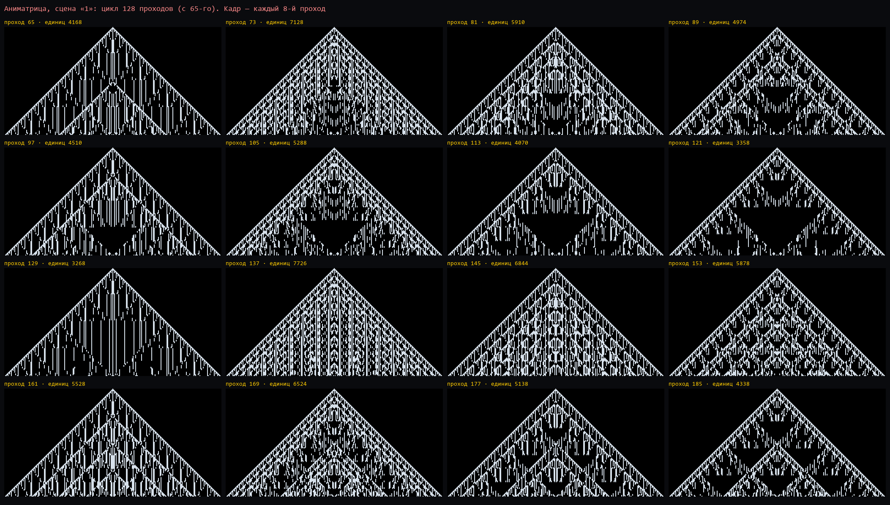
Цикл по 8 проходов: внешний контур не меняется, внутри «дышит» вложенный треугольник, плотность волнами.
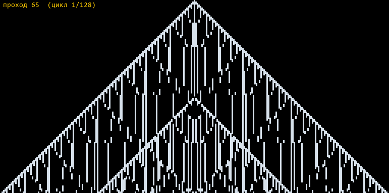
Весь цикл, 128 проходов по кругу (0,35 с на проход). Собрать такой же в Code — 🎞 GIF под Аниматрицей.
1.3Почему 128
Без нулей проход делает строку i равной XOR всех строк над ней и её самой. Через k проходов
строка собирается из строк выше с коэффициентами C(i−j+k−1, k−1) по модулю 2 — треугольник Паскаля по чётности. По
теореме Лукаса (1878) через 2m проходов, если 2m ≥ числа строк, остаётся только сама строка.
Отсюда период — ближайшая степень двойки не меньше числа строк: 128 строк → 128, 100 → 128, 200 → 256.
1.4Любой кадр — XOR сдвинутых копий
Кадр через k проходов после 65-го — это XOR копий 65-го кадра, сдвинутых вниз на все d, у
которых нет общих двоичных единиц с k−1 (d & (k−1) = 0). Пример: проход 155 (он же 667-й),
k = 90, k−1 = 1011001 → сдвиги 0, 2, 4, 6, 32, 34, 36, 38; проверено — совпадает символ в символ.
Густо–редко через проход: на чётных единиц ровно вдвое меньше (в среднем 2562 против 5075; 65 — 4168,
66 — 2096) — поэтому чётные кадры на листе темнее. И строже: в чётных проходах ни одна единица ни разу не стоит
прямо над другой (пар «единица над единицей» — 0, в нечётных — в среднем 3751). Нечётный кадр — вертикальные
штрихи (у 90% единиц над ними тоже единица), следующий проход складывает строку с соседней сверху, и штрих гасится до
точек. Кадры чередуются: штрихи — точки — штрихи.
Родственники через 8: кадры, отстоящие на 8, делят общий мотив.
Через 64 к строке прибавляется строка на 64 выше — проступает вложенный сдвинутый треугольник.
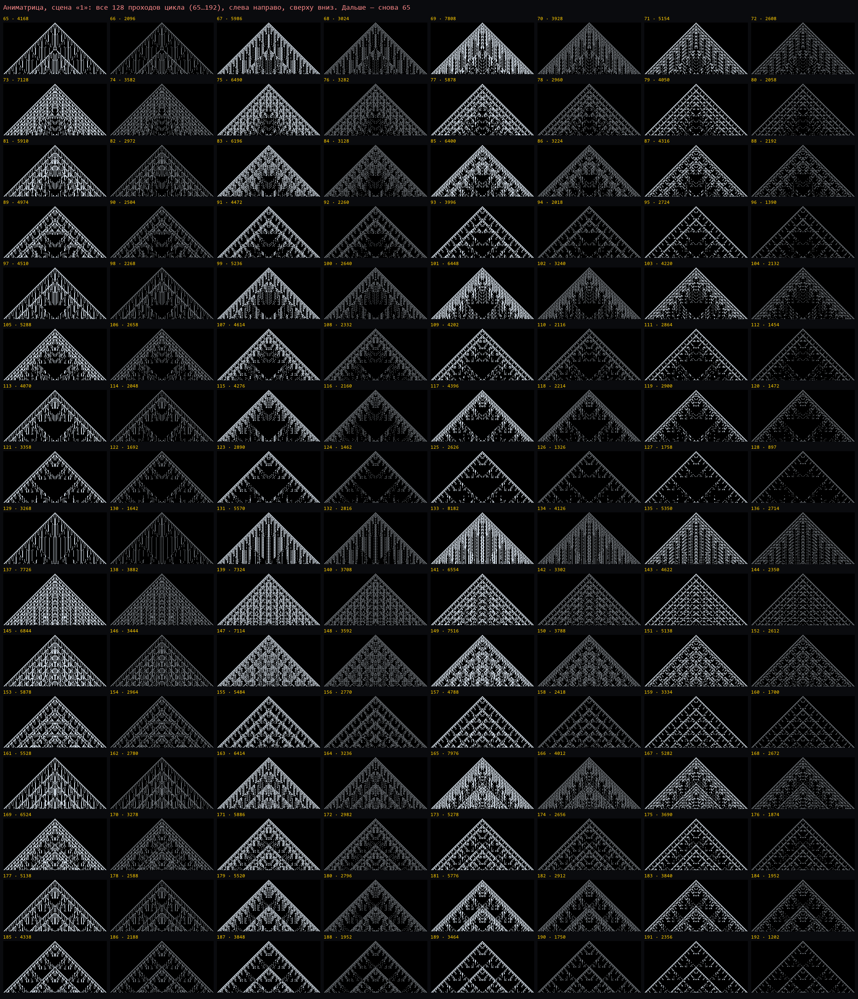
Все 128 проходов (65…192), над кадром — номер прохода и число единиц. Ряды по 8 держат свой мотив.
1.5У каждой строки свой период
строки
0
1
2–3
4–7
8–15
16–31
32–63
64–127
период
1
2
4
8
16
32
64
128
Период строки — ближайшая степень двойки больше её номера (Лукас по одной строке: ей нужны только строки выше).
Треугольник — часовой механизм: каждая полоса вдвое медленнее верхней, общий период — период нижней. В Code:
▤ Полосы периодов в «Виде».
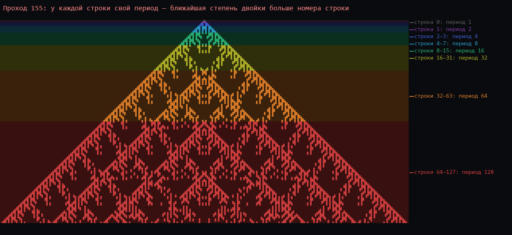
Проход 155, строки окрашены по своему периоду.
2Ромбыкадры-ромбы, их размер, близнецы, ромб = бит, лестница 1024
2.1Ромбы-«кадры»
Картинка почти повторяется при сдвиге по диагонали: (16 строк, ±16 символов) — 89,5% клеток, 32 — 90%, 8 и 24
— около 70%, мимо на один символ — 59% (уровень случайности). Ромбы — 32 строки высотой, соседние сдвинуты на 16.
Причины: Правило 90 ведёт узор ровно на символ за строку (диагонали под 45°), а треугольник Серпинского сложен из своих
копий, сдвинутых по диагонали. В Code: ◇ Ромбическая сетка.
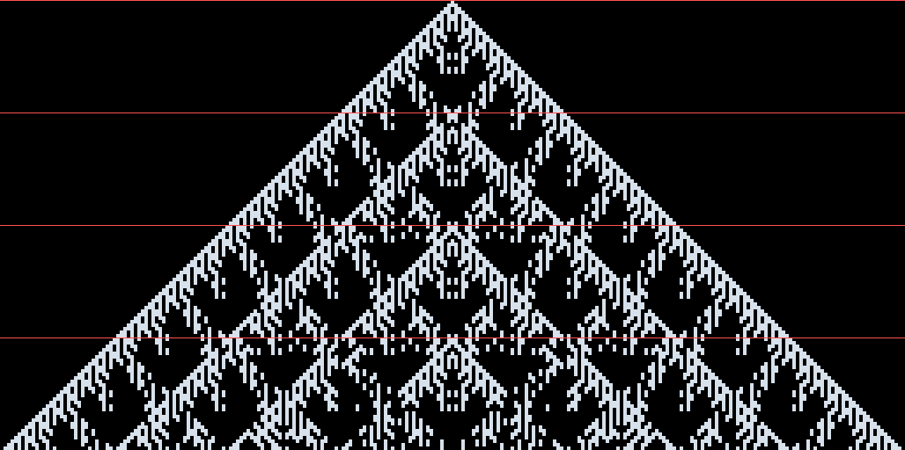
Проход 155: на каждой красной линии (через 32 строки) начинается новый «кадр» мотива.
2.2Размер ромбов — нули в k−1
Каждый нулевой разряд 2j в двоичной записи k−1 добавляет копию со сдвигом 2j и включает ромбы
этого размера. Проход 977 (k = 16, 0001111) — три размера сразу: 16, 32, 64. Проход 129 (0111111)
— только 64. Проход 155 (1011001) — 32 плюс утолщения. Проход 192 (1111110) — крупных нет. В Code:
сетка с шагом «авто — по проходу» рисует включённые размеры сама, с легендой.
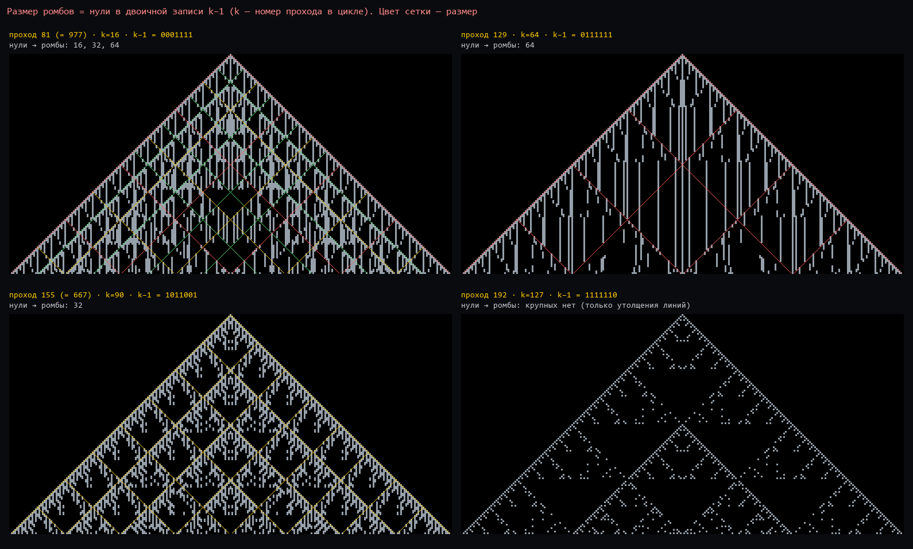
Сетка: зелёная — 16, жёлтая — 32, красная — 64.
2.3Ромбы изнутри
На проходе 155 — 21 целый ромб; с верхним совпадают на 83–97% (на средней вертикали — 97%). За весь цикл ромбов
2688 (21 место × 128 проходов), разных 1541: 1206 встречаются один раз, 130 — по 4, 128 — по 6, два почти пустых —
по 20. Верхний ромб (строки 0–32) повторяется через 64 прохода, у него 64 разных кадра.
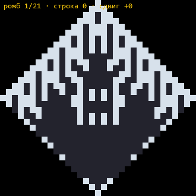
21 ромб прохода 155 подряд, как кадры.
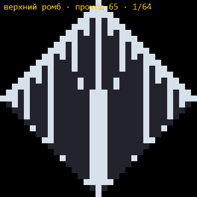
Верхний ромб за свой цикл в 64 прохода.
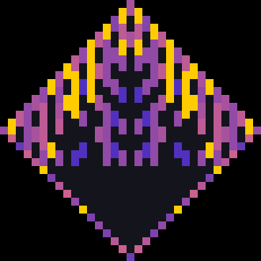
Все 21 ромб прохода 155 наложены: жёлтое — единица во всех, тёмное — пусто во всех, фиолетовое — разнится.
2.4Близнецы
Зеркало. Каждый ромб либо симметричен сам (303), либо имеет зеркального близнеца (1238) — всегда в том же
проходе на зеркальном месте. Вся анимация в каждом кадре симметрична слева направо: новая информация — только в
половине. В Code: ⫼ Ось симметрии с живым процентом.
Точные. То же место через 64 прохода (320 пар); тот же проход, на 32 строки ниже по боковой стороне (по 128
пар в каждую сторону — вдоль краёв чередуются всего два кадра); на 64 ниже (по 64).
Почти. Многие пары отличаются на 1 или 3 клетки — и всегда только на краю ромба, в вершинах: граница
принадлежит следующей, более медленной полосе. Верхний ромб на проходах 65 и 97 отличается одной нижней вершиной.
Семья пустых. Самая большая семья почти одинаковых (58) — пустые ромбы внизу по центру, та самая тёмная «дыра».
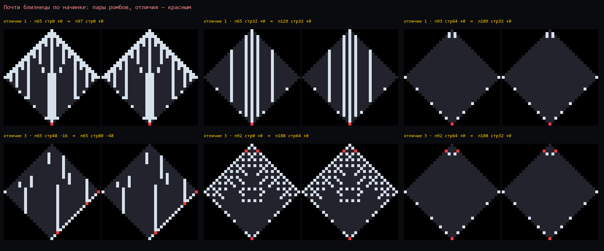
Почти близнецы: отличия (красным) — только на границе.
2.5Каждый ромб — один бит
Идея пользователя: свернуть каждый ромб в один бит так, чтобы зеркальные близнецы получали одинаковый бит, а у
симметричного ромба бит зависел от соседей через ось. Обоим условиям отвечает чётность ромба — XOR всех его
клеток: у близнецов единиц поровну — бит один и тот же; в симметричном ромбе каждая клетка равна своей соседке через ось,
пары гасят друг друга в XOR, и остаются только клетки на самой оси. А XOR — родная операция волны.
Из ромбов выходит новый треугольник: ромбы 32 строки — 21 бит, 16 строк — 105, 8 строк — 465.
Он всегда симметричен — во всех 128 проходах и при всех размерах.
У него свой цикл — тоже ровно 128. При ромбах 16 и 8 все 128 кадров разные; при ромбах 32 разных всего 40 — грубая
картина повторяется внутри цикла, но целиком возвращается только через 128.
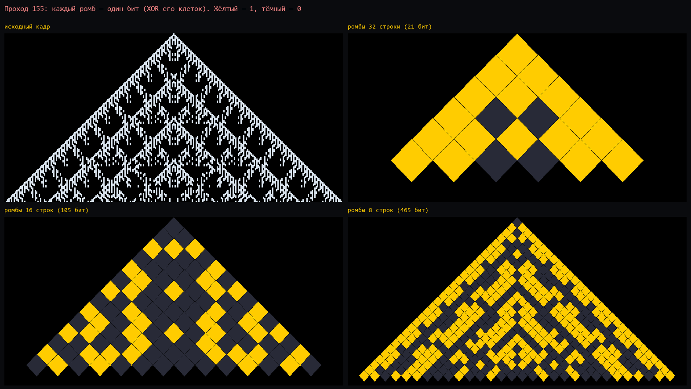
Проход 155 и он же из ромбов-битов: жёлтый — 1, тёмный — 0. На крупных ромбах видно ядро: жёлтая рамка и тёмная «дыра» у низа.
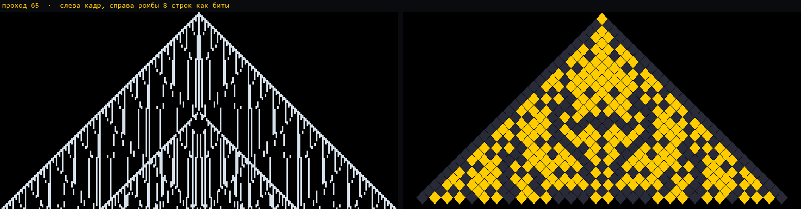
Весь цикл: слева кадр, справа ромбы 8 строк как биты.
Ромбы из ромбов. Треугольник из ромбов-битов лежит в той же геометрии, что и исходный (бит через клетку, как у
Правила 90), поэтому его можно свернуть ещё раз — и ещё. Лестница с ромбами высотой 4: 128 строк → 62 → 29 → 13 → 5 → 1.
ступень
1
2
3
4
5
строк · бит
62 · 1953
29 · 435
13 · 91
5 · 15
1 · 1
период
128
128
128
128
128
разных кадров за цикл
128
128
128
91
2
15 × 8
Каждая ступень всегда симметрична и держит период исходной картины — 128, хотя по своему числу строк у
неё была бы своя волна с периодом 64, 32, 16, 8. Ступени помнят часы оригинала.
Ступень не подчиняется волне сама: проход волны по ступени не даёт ступень ни одного из следующих проходов.
Свёртка ромбами и волна не перестановочны — масштаб у этой волны не самоподобен.
Верхний бит (весь треугольник, свёрнутый до одной клетки) внутри цикла повторяется ровно через 12 проходов
блоком 000111101111, без единого нарушения. Но 128 на 12 не делится — на стыке циклов ритм сбивается
(по кругу совпадение 94%). Откуда 12 — разобрано (v0.015):
Верхний бит — чётность единиц кадра на следе: фиксированном наборе из 3613 клеток (найден обратным ходом
свёртки; сверено на всех 128 проходах).
След, приложенный к копиям начального кадра (проход 65), сдвинутым на d строк, выделяет набор сдвигов
D = {d : d mod 12 ∈ {2, 4, 9, 11}} — 2, 4, 9, 11, 14, 16, 21, 23, … — он периодичен с шагом 12.
Верхний бит на проходе k = чётность числа d ∈ D с d & (k−1) = 0 (закон «кадр — XOR сдвинутых копий»);
совпадает на всех 128.
Период 12 у D по модулю 2: 1 + x¹² = (1+x)⁴·(1+x+x²)⁴. Множитель (1+x)⁴ даёт ритм 4, а
1+x+x² — ритм 3 (кубические корни из единицы): вместе 12. Строк всего 128 — ряд обрывается, отсюда сбой на
стыке циклов.
Это свойство лестницы из ромбов высотой 4, а не волны: при высоте 2 ритм 68, при 8 — 96, при 6 ритма нет.
Дальше (v0.016): шаг 12 сидит в самом следе — его центральный столбец это 111101111000, повторённый
через 12. Складывается по ступеням: после первой ступени столбец повторяется через 4 (0111), на второй-третьей
ритм смешанный, с четвёртой — ровно 12: четвёрка первой свёртки × тройка, набегающая дальше. Тройку даёт именно ромб:
одномерная модель (только строки, окно 5 строк с шагом 2) даёт шаг 5, а не 12 — нужен захват соседних столбцов и
перекрытие соседних ромбов по краям. Волна этот след лишь «читает»; чистый D с шагом 12 выходит только при отсчёте от
начала цикла (65-й проход) — от шума, одной точки или других кадров D не периодичен. Вопрос закрыт: остальное —
комбинаторика лестницы.
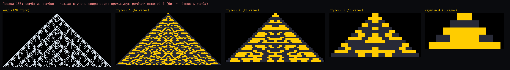
Проход 155 и четыре ступени свёртки: 62, 29, 13 и 5 строк.
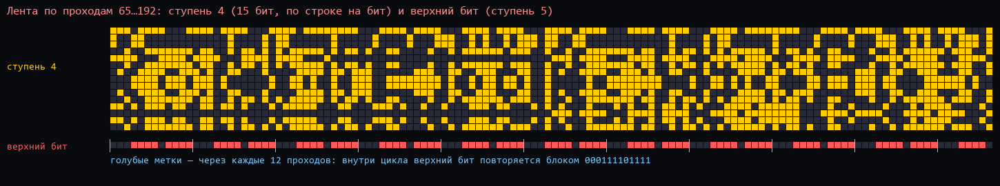
Лента по проходам: ступень 4 (15 бит) и верхний бит; голубые метки — через 12 проходов.
2.61024 строки и лестница размеров
Серпинский по правилу 90 (сид 1, фон обрезан), от 64 до 1024 строк, прогнан через весь цикл вне страницы — тем же правилом
волны и той же переписью ромбов, что в Треугольнике (сверено с ним: 64 строки,
проход 5, ромб 16 — 21 ромб, 15 рисунков, 9 букв; 128 строк, ромб 32 — те же 1541 разных рисунков, что в разделе 2.3).
строк N
64
100
128
256
512
1000
1024
период P
64
128
128
256
512
1024
1024
цикл с прохода
33
65
65
129
257
513
513
Разгон — P/2 + 1 во всех этих прогонах, в том числе у 100 и 1000 строк. Поправка v0.021: это совпадение
выбора N — все они в «верхней четверти» удвоения; в общем случае см. раздел 4.5. Нули живут только в разгоне — во всех кадрах
цикла один символ «1».
Число ромбов зависит только от q = N/S: (q − 1)(2q − 1) — 3, 21, 105, 465, 1953, 8001, 32385 при q = 2 … 128.
Подобие. При одном и том же q картина одна и та же на любом N. q = 4 (ромб в четверть высоты): в кадре 21 ромб,
14–15 разных рисунков, 8–9 букв — у 64, 128, 256, 512 и 1024 строк; разных рисунков за цикл ≈ 12·P (11,98 → 12,22,
дальше не растёт). Мелкие ромбы (q ≥ 8) за цикл разнообразнее с ростом N, но медленно.
Самые крупные ромбы не повторяются. q = 2 (три ромба, вершина и два боковых): за цикл ровно 3·P разных
рисунков и 2·P букв — каждый кадр даёт три новых ромба, ни один не встречается дважды, а боковые всегда зеркальны
друг другу.
Сложность кадра — от числа копий. Чем больше нулевых разрядов у k − 1 (копий-треугольников, раздел 1.4), тем больше
в кадре разных ромбов. 1024 строки, ромб 32: 1 нулевой разряд — в среднем 475 рисунков, 5 — 572, 9 — 648.
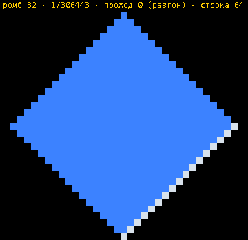
1024 строки, ромб 32: первые 150 разных рисунков в порядке появления, с прохода 0 (первые — ещё разгон, с нулями; всего разных 306 443, из них в самом цикле 265 104) — то, что собирает
кнопка «📦 Все ромбы цикла». Полные GIF по всем размерам (8…512, по 1500 кадров, 3–21 МБ) — локально, в
archive\_issledovanie-treugolnik-1024\, вместе с таблицей и скриптом расчёта.
3Зеркало и надписизеркало через центр с XOR, шестиугольник, буквы из ромбов
3.1Зеркало через центр с XOR
Идея пользователя: на экране строки идут по кругу — снизу треугольник (начало текста, строка 0 — вершина), сверху
трапеция (конец текста); они касаются в центре. Отразить нижний треугольник вверх через эту точку (строка i →
строка 127−i) и сложить XOR с тем, что там есть. Треугольник симметричен слева направо, поэтому отражение через
центр — то же, что отражение вверх. Сделано для верхней половины (строки 64–127), нижняя не тронута.
Меняется только середина трапеции — там, куда ложится перевёрнутый треугольник (вершиной вниз, к центру).
Проход 128 — знак Зеркалиуса. Середина трапеции на этом проходе совершенно пуста (0 единиц): трапеция распалась
на два треугольника. Отражение ложится в пустоту точным зеркалом — выходят песочные часы: пирамида и её отражение
вершинами через центр.
Проход 155 — каша. Верх и отражённый низ совпадают лишь на 49% (уровень случайности): XOR не гасит, а
смешивает, середина густеет (3976 → 4868 единиц в верхней половине). Лучше всего совпадают проходы 128 (91%), 192, 126, 96.
После операции волна снова циклична — период 128, сразу, без разгона.
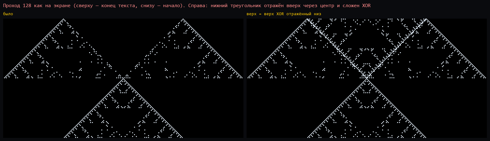
Проход 128: слева как было (середина трапеции пуста), справа — зеркало вписалось в пустоту.
И обратно: верх вниз, в противоположные стороны. Боковые части верхней трапеции отражены через центральную точку
(поворот на 180°): верхний левый угол ложится в пустоту справа от нижнего треугольника, верхний правый — слева; XOR с нижней
половиной. И вариант «оба сразу» — каждая половина XOR отражённая другая, от исходного кадра.
Проход 128: боковые треугольники вписываются в пустоты точными копиями — справа и слева встают два целых
больших ромба (высотой 64). «Оба сразу» — вся картина становится решёткой больших ромбов с крестом через центр:
ромбическая сетка, только в масштабе 64, собранная из одного кадра.
Проход 155: общий контур становится шестиугольником (трапеция + её отражение), середина — густая смесь.
«Оба сразу» всегда даёт картину, симметричную сверху вниз (проверено на 128 и 155), с удвоенным числом единиц
(897 → 1794). После любой из операций волна снова циклична — период 128, без разгона.
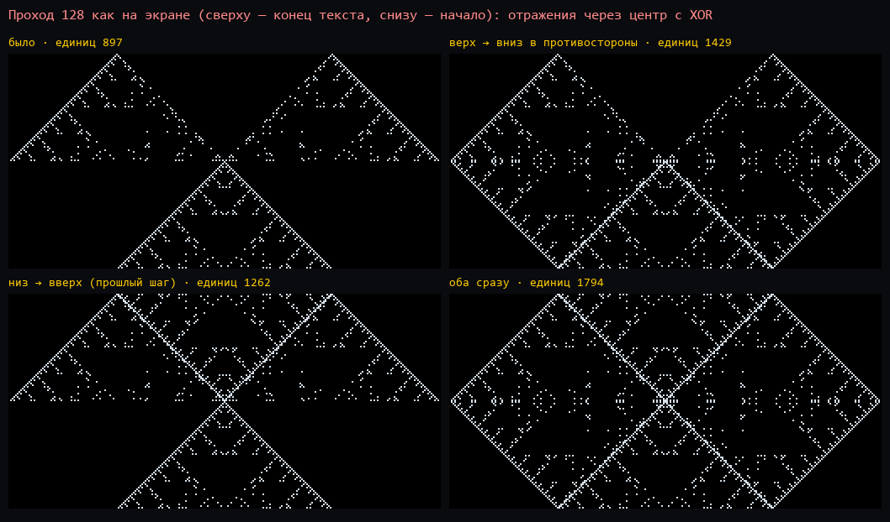
Проход 128: было; верх → вниз в противоположные стороны; низ → вверх; оба сразу.
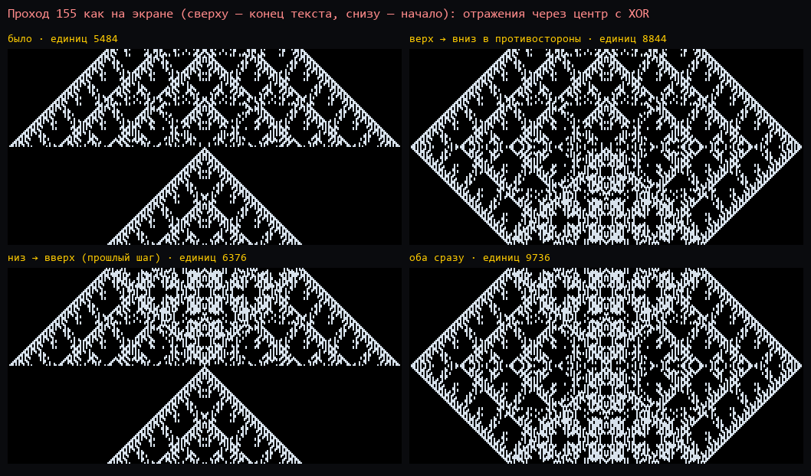
Проход 155: те же четыре варианта.Проход 155, «оба сразу», крупно: шестиугольник, симметричный сверху вниз и слева направо. В Code — «⧖ Зеркало» в разделе Логика (35.58).
3.2Надпись: ромбы как буквы
Слово пользователя, глядя на треугольник с ромбической сеткой: «почти надпись». Проверили буквально: каждый ромб сетки —
буква, одинаковые ромбы — одна и та же буква, зеркальный ромб — та же буква строчной. Ромбы 16 строк, проход 155.
Алфавит маленький: 105 ромбов, разных 47, а с точностью до зеркала — 26 букв. Самая частая — 14 раз, семь
букв по одному-два раза. Если не смотреть на самый край ромба (он общий с соседями), букв остаётся 15. По всему
циклу в кадре от 22 букв (проходы 143–144, 159–160) до 32 (98–100); ромбы 8 строк — от 48 до 107, ромбы 32 — 8–9.
Каждая строка — палиндром-зеркало: слева строчные, справа те же прописные в обратном порядке. Сами себе
симметричны только 5 букв, и они стоят лишь на средней вертикали.
Горизонтальных «слов» нет: повторов длиннее 4 букв в строках не нашлось.
«Слова» идут вдоль сторон. Ряд ромбов, параллельный боковой стороне, после короткого «заголовка» повторяет одно
слово без конца:
ряд 0 (край): Ш | а б · а б · а б · а б · а б · а слово «аб», длина 2
ряд 1: А Э | д е в з · д е в з · д е в слово «девз», длина 4
ряд 2: Б Д Ю | г ж и Л · г ж и Л · г слово «гжиЛ», длина 4
Длина слова ряда e — ближайшая степень двойки больше e+1: 2, 4, 4, 8, 8, 8, 8, 16, …; слово начинается не
позже уровня 2e+1. Проверено на всех 128 проходах цикла (ромбы 8 строк — ряды 0–6, ромбы 4 — ряды 0–14), без
исключений. Это тот же закон, что «у каждой строки свой период» (раздел 1.5), только вдоль стороны: у треугольника
Серпинского стороны равноправны с основанием, и чем дальше ряд от края, тем медленнее его часы.
Проход 155, каждый ромб подписан своей буквой. Цвет — номер ряда вдоль стороны: жёлтый край «аб аб…», голубой
«девз…», зелёный «гжиЛ…».Алфавит прохода 155 по частоте: прописная — как на рисунке, строчная — её зеркало. Половина букв — почти пустые
ромбы с разным краем.
Откуда нули: генератор «Правило 90» пишет внутри треугольника «0» там, где клетка пустая, а «Обрезать фон»
превращает в пробелы только то, что снаружи; ширина — 2·строк+1 (у 128 строк — 257, как в журнале сцены «1»). Тем же
способом построены треугольники на 50, 64, 100, 128, 200, 256 строк (сид «1») и прогнаны волной с нулевого прохода:
строк
50
64
100
128
200
256
период
64
64
128
128
256
256
нули вымерли, цикл с прохода
33
33
65
65
129
129
нулей в начале
2083
3367
8749
14197
36247
58975
Период — ближайшая степень двойки не меньше числа строк, как и предсказано: 100 → 128, 200 → 256.
128 строк дали те же «цикл 128 с 65-го», что показала страница, — значит, расчёт повторяет Code точно.
Разгон у этих треугольников — ровно половина периода плюс один проход: 33 = 64/2 + 1, 65 = 128/2 + 1,
129 = 256/2 + 1; нули вымирают именно к этому проходу, и тут же начинается цикл. Поправка v0.021: это верно не для
всех N — только для верхней четверти каждого удвоения; точная формула — в разделе 4.5.
Шире (v0.006): 17 прогонов — другие правила, сиды, без обрезки фона.Период всегда P — ближайшая степень
двойки не меньше числа строк: при любом правиле, сиде, с обрезкой и без, и даже когда нули не вымирают. А вот
«половина + 1» — не общий закон, а свойство треугольника Серпинского (правило 90 или 18 из одной точки, с обрезкой):
треугольник
64 строки: цикл с
100 строк: цикл с
нули
правило 90 и 18, сид 1
33 (= P/2 + 1)
65 (= P/2 + 1)
вымирают
правило 150, сид 1
40
80 (оба — 5/8 P)
вымирают
правило 30, сид 1
10
11
вымирают
правило 110, сид 1
8
8
вымирают
правило 90, сид 11
18
—
вымирают
правило 90, сиды 101, 1101, 10011
33, 18, 18
—
живут в цикле
правило 90 и 30, без «Обрезать фон»
32 (= P/2)
64 (= P/2)
живут в цикле
Нули вымирают не всегда: при сидах 101, 1101, 10011 и без обрезки фона они живут внутри цикла, а период всё равно P.
Без обрезки цикл начинается ровно на P/2.
Правило 150 вблизи (100 строк). Исходный треугольник почти весь из нулей (7348 синих против 2652 единиц). За
первые 10 проходов нулей остаётся 502, к 40-му — 16, а дальше несколько одиночек держатся до 80-го: они и тянут
разгон до 5/8 периода. С 80-го — чистый цикл 128 (проход 208 = проход 80). У цикла правила 150 свой рисунок — сквозные
вертикальные «стволы» и треугольники по бокам, а не дышащий вложенный треугольник, как у правила 90.
Правило 150: два верхних ряда — разгон (нули синие), два нижних — цикл через каждые 16 проходов.Правило 150 подряд: исходный треугольник, 80 проходов разгона, затем весь цикл из 128.
Правило 30 вблизи (100 строк) — полная противоположность. Правило 30 хаотическое: в исходном треугольнике нулей
и единиц почти поровну (4804 и 5196), без правильного рисунка. Нули гибнут быстро: 3360 после первого прохода, 453 после
пятого, к 11-му — ни одного. Разгон — всего 11 проходов. Цикл на вид — шум без треугольников Серпинского, но строгий:
период ровно 128, проход 139 = проход 11 символ в символ (4927 единиц и там, и там). Левый край треугольника
правила 30 и в цикле держит правильные косые полосы, правый — хаос.
Правило 30: два верхних ряда — разгон почти по проходам (нули синие), два нижних — цикл через каждые 16.Правило 30 подряд: 11 проходов разгона (медленнее), затем весь цикл из 128.
Правило 110 вблизи (100 строк). Из одной точки правило 110 растёт только влево, и треугольник выходит
половинкой — с вертикальным правым краем. Нулей в начале 2174 при 2876 единицах; разгон самый короткий из всех —
8 проходов (1682 нуля после первого, 234 после шестого, к 8-му — ни одного). Дальше — цикл ровно 128, проход 136 =
проход 8 (по 2550 единиц). Форма треугольника на период не влияет: он всё равно задан числом строк. Зеркальной
симметрии у половинки, понятно, нет — «⫼ Ось симметрии» здесь ничего не покажет.
Правило 110: два верхних ряда — разгон почти по проходам (нули синие), два нижних — цикл через каждые 16.Правило 110 подряд: 8 проходов разгона (медленнее), затем весь цикл из 128.
4.2Без обрезки: у каждого столбца своя метка
Проверка пользователя: «Правило 90», 50 строк, без «Обрезать фон» — весь прямоугольник заполнен символами, вне
треугольника сплошные «0», пробелов нет вовсе. Разгон 32, период 64 (как и предсказано: P = 64, без обрезки цикл с P/2).
Но в цикле единиц почти не остаётся — от 1 до 50 на кадр, и все они в одном центральном столбце, под сидом; нули
живут. С обрезкой — наоборот: нули вымирают полностью, единицы живут. Разгадка закрывает оба старых вопроса.
Столбцы не смешиваются. Волна переписывает клетку строки r+1 только по клетке того же столбца строки r.
Каждый столбец — своя одномерная волна сверху вниз; соседи друг о друге не знают.
Метка ползёт сверху. Где встречаются «0» и «1», остаётся верхний. Поэтому метка самой верхней непустой клетки
столбца (в исходном тексте; строка 0 волной не переписывается) постепенно заливает весь столбец. К началу цикла каждый
столбец однометочный — проверено на всех кадрах цикла, метка всегда равна метке верхней клетки.
Дальше — чистый XOR. В однометочном столбце правило волны — это «одинаковые → пусто, разные → символ», то есть
XOR по наличию символа. Поэтому период всегда степень двойки P, какими бы ни были нули: метки просто едут на узоре
XOR и на него не влияют. (Пока метки не выровнялись, «0» под «1» даёт символ, а не пусто — это и есть разгон.)
Когда нули вымирают: нули живут в цикле ровно в тех столбцах, чья верхняя непустая клетка — «0». С обрезкой
верх каждого столбца — край треугольника, а у Серпинского и правил 150, 30, 110 из одной точки край всегда «1» — нули
вымирают. Сиды 101, 1101, 10011 оставляют «0» в строке 0 — нули живут (это и были «загадочные» строки таблицы выше).
Без обрезки строка 0 — сплошные «0», кроме сида, — единицы остаются только под сидом. Закон совпал на всех 13 прогонах
(правила 90, 18, 150, 30, 110; сиды 1, 11, 101, 1101, 10011; с обрезкой и без).
Полосы во всю ширину на кадрах без обрезки — это фон вне треугольника: там столбцы из одних «0» однометочны с
самого начала и сразу идут чистым XOR, строки мигают своими периодами — те же полосы, что в разделе 1.5.
Почему разгон именно такой — разобрано в разделе 4.3: без обрезки он считается точно и выходит P/2, у Серпинского с
обрезкой — в разделе 4.5 (не всегда P/2 + 1!), у правила 150 (5/8 P) формулы пока нет.
Без обрезки: проход 0 — треугольник на сплошном «0»; к проходу 32 единиц остаётся две, все в центральном столбце;
дальше цикл 64, синие «0» живут.Тот же треугольник с обрезкой: к проходу 33 нули вымирают, в цикле только «1».Без обрезки, проходы 0–96: разгон и полтора цикла.
4.3Доказательство: период обязан быть P
Раздел 4.2 показал, что происходит: столбцы живут порознь, метка верхней клетки заливает столбец, дальше чистый
XOR. Это было замечено на прогонах. Ниже — почему иначе и быть не может, при любом правиле, сиде и любых нулях.
Метка столбца вечна. Строку 0 волна не переписывает, а над пустой клеткой ничего не меняется («пробел и
символ → символ», «два пробела → пробел»), поэтому верхние пробелы столбца остаются пробелами, а самая верхняя
непустая клетка стоит на месте и со своим символом. Это и есть метка столбца ℓ.
Выше верхней чужой клетки чужому взяться неоткуда. Пока всё над ней — пробелы и ℓ, бегущий сверху
накопитель бывает только пробелом или ℓ, а значит и пишет только пробел или ℓ.
Над чужой клеткой правило — чистый XOR. В одномето́чной части «одинаковые → пусто», «символ и пробел →
символ»: один проход — накопительный XOR сверху, то есть умножение на 1/(1+z) над GF(2).
Каждая строка когда-нибудь непуста. Пусть h — половина периода строки r (период
строки — ближайшая степень двойки больше её номера, раздел 1.5). Тогда
(Phx)r = xr ⊕ xr−h, потому что
(1+z)−h ≡ 1 + zh с точностью до строки r. Если бы строка
r была пуста на всех проходах, пустой на всех проходах была бы и строка r−h, и так вниз до
строки 0 — а она непуста всегда. Значит строка r хоть раз, да непуста.
Вывод. Верхняя чужая клетка стоит ровно под такой строкой, и в проход, когда та непуста, «два разных →
верхний» ставит на её место ℓ. Чистая часть столбца растёт строго вниз, чужие метки кончаются за конечное число
проходов, и дальше столбец — чистый XOR. Поэтому период всегда P, а нули — лишь ярлык, едущий по узору XOR и на
него не влияющий. Нелинейность волны живёт только в разгоне.
Когда нули вымирают — оттуда же: нули остаются в цикле ровно в столбцах с меткой «0». С обрезкой верх столбца —
край треугольника, а он «1», кроме столбцов под самим сидом. Значит нули вымирают тогда и только тогда, когда в сиде
нет нуля: 1 и 11 — вымирают, 101, 1101, 10011 — живут, и живут именно в столбцах под своими нулями. Без обрезки
строка 0 — сплошные «0», кроме сида, поэтому выживают нули, а единицы остаются только в столбце под сидом (те самые
«от 1 до 50 единиц на кадр» из раздела 4.2).
Разгон без обрезки — ровно P/2, и это теперь считается. Столбец на отклонении d от центра: сверху
d клеток сплошного фона «0», под ними край треугольника «1» — первая чужая клетка. В XOR-мире метки «0»
сплошной фон — это сплошные единицы, и строка d−1 на проходе k равна
C(d−1+k, k) по модулю 2; по теореме Куммера это нечётно ровно тогда, когда в двоичной записи
k & (d−1) = 0. Значит верхняя чужая клетка столбца гибнет на проходе
min{k ≥ 1 : k & (d−1) = 0} — совпало для всех 676 столбцов на прогонах в 50, 64, 100 и 128 строк.
Максимум берётся там, где d−1 = 2j−1: тогда k обязан быть кратен
2j, то есть равен d. Наибольшее такое d ниже числа строк — это
P/2, и разгон равен ему.
Проверка расчётом заодно подтвердила и то, на чём всё держится: начало цикла — это в точности тот проход, на
котором гибнет последняя чужая метка (совпало на всех прогонах: 33, 33, 65, 65 у Серпинского, 40 и 80 у правила 150,
32, 32, 64 без обрезки). Разгон — это ровно время жизни нулей, а не что-то сверх него.
4.4Классика и своё
Классика: Лукас (1878), Глейшер (1899: в строке n треугольника Паскаля нечётных чисел 2 в степени «число единиц в
двоичной записи n»), Серпинский (1915), Вольфрам с соавторами (1983–84: Правило 90 и линейные клеточные автоматы).
Своё у Zerkalius — три символа и правило «два разных → верхний»: волна нелинейна, отсюда разгон с вымиранием
нулей. В литературе такого варианта не встречалось, но утверждать, что его никто не изучал, нельзя.
Закрыто (v0.019, раздел 4.3): почему период не меняется от нулей — доказано: чужие метки гибнут за конечное
число проходов, дальше столбец идёт чистым XOR, и нелинейность живёт только в разгоне. При каких сидах нули вымирают —
тогда и только тогда, когда в сиде нет нуля. Разгон без обрезки — ровно P/2, с выводом по теореме Куммера.
Осталось:точная формула разгона у Серпинского с обрезкой — найдена и для рекордсмена выведена в разделе 4.5 (открыта только верхняя граница); у правила 150 (5/8 P). Известно, где
искать: последними держатся не самые глубокие клетки, а вполне определённые — у Серпинского на отклонении P/4 от центра,
у правила 150 на отклонении P/8 около строки 3P/4.
4.5Разгон: точная формула (и поправка к «P/2 + 1»)
Столбцы живут независимо (раздел 4.2), клетка видит только клетки выше в своём столбце — значит, у каждой клетки
треугольника своё время жизни нуля τ, и оно не зависит от того, сколько строк ниже. Посчитано для всех клеток до
1024 строк, и прямым прогоном до повтора — для каждого N от 3 до 139 и выборочно до 512.
Цикл начинается ровно тогда, когда гибнет последний «0»: начало цикла = max τ по строкам треугольника + 1 —
расхождений ноль.
max τ растёт скачками, и не на степенях двойки, а на строках 3·2k−1 + 1: 4, 7, 13, 25, 49, 97,
193, 385, 769 — там τ впервые доходит до 2k. Держится дольше всех одна пара клеток: строка 3·2k−1 + 1,
отступ ±2k−1 от оси (при N = P это «отклонение P/4 около строки 3P/4» из раздела 4.4).
Формула. Треугольник из N строк (правило 90, сид 1, фон обрезан) входит в цикл на проходе
2m + 1, где 2m — наибольшая степень двойки, не превышающая 2(N − 2)/3 (при N ≤ 4 — проход 1).
Проверено для всех N от 2 до 1024 — без исключений.
N
50…64
65…97
98…128
129…193
194…256
257…385
386…512
513…769
770…1024
период P
64
128
128
256
256
512
512
1024
1024
цикл с прохода
33
33
65
65
129
129
257
257
513
Поправка к разделам 4.1 и 2.6. «Разгон = P/2 + 1» верно только для N от 3·2m−2 + 2 до 2m — верхней
четверти каждого удвоения. В остальных трёх четвертях (например, 65…97 строк при P = 128) цикл начинается вдвое раньше,
с P/4 + 1: самая долгоживущая клетка ещё не вошла в треугольник. Прежние прогоны (50, 64, 100, 128, 200, 256, 512, 1000,
1024 строки) все случайно попали в «верхние четверти», поэтому закон выглядел всеобщим.
128 строк: цвет — сколько проходов в клетке держится «0». Кольца — рекордсмены: строка 97, отступ ±32 (τ = 64,
отсюда цикл с 65-го) и строка 49, отступ ±16 (τ = 32). Обрежьте треугольник выше 97-й строки — и цикл начнётся с 33-го.
Почему рекордсмен именно такой — вывод (v0.022). Столбец с отступом a = 2k−1, сверху край
треугольника «1» (строка a), глубина — от неё вниз.
Исходный столбец. На нечётной глубине — «0» (чётность строки не та, правило 90 там ставит ноль). На чётной
глубине 2i — C(a+2i, i) по модулю 2; при 0 < i < a это чётно: при сложении i и a+i младший разряд i переносится
(Куммер). Значит под верхней «1» лежат ровно 2a − 1 нулей подряд. На глубине 2a — C(3a, a): a и 2a не пересекаются,
переносов нет, нечётно — «1». На глубине 2a + 1 — снова «0»: это и есть рекордсмен, строка a + 2a + 1 = 3·2k−1 + 1.
Первый проход. Верхняя «1» заливает все 2a − 1 нулей («разные → верхний») — получается сплошной блок из 2a
единиц. «1» на глубине 2a встречает над собой «1» и гаснет в пробел — и этот пробел прикрывает ноль под ним
(«пробел и символ → символ»).
Дальше блок — чистый XOR (метка одна). Клетка-щит под блоком (глубина 2a) после ещё k проходов равна
Σ C(m+k−1, k−1) по m = 1…2a = C(2a+k, k) − 1 (правило хоккейной клюшки): она непуста ровно
тогда, когда C(2a+k, k) чётно, а по Куммеру это k & 2a ≠ 0. Первое такое k — само 2a.
Итог: щит пуст 2a проходов подряд, ноль под ним живёт до прохода 2a = 2k и гибнет на проходе
2k + 1 — ровно как в таблице.
столбец a = 4, глубина 0…11 (· — пробел) проход 1: блок 1111 1111, щит «·», под ним рекордсмен «0»
п. 0: 100000001000 п. 3: 11··11···0·· п. 6: 1·1······00·
п. 1: 11111111·0·0 п. 4: 1···1····000 п. 7: 11·······0··
п. 2: 1·1·1·1··00· п. 5: 1111·····0·0 п. 8: 1········000 п. 9: 111111111111 — щит непуст, ноль погиб
Отсюда и формула целиком, если никто не живёт дольше рекордсменов: треугольник из N строк содержит рекордсмена τ = 2k
при 3·2k−1 + 1 ≤ N − 1, то есть 2k ≤ 2(N − 2)/3. Открыто одно: общее доказательство, что
никакая другая клетка не живёт дольше (верхняя граница) — пока это проверено сплошным расчётом всех клеток до 1024 строк.
(Первая догадка v0.021 — «сплошная лесенка 1 0 1 0 над рекордсменом» — была неверна: над ним не лесенка, а сплошь нули.)
4.6Протекание: как «1» и «0» текут с вершины вниз
Вопрос пришёл из «🗻 3D» Треугольника: на гранях пирамид видны полосы-слои, и
по ним сверху вниз что-то «протекает». Что именно — видно по одной клетке и её верхнему соседу (он уже пересчитан этим же проходом).
сверху
1
0
1
0
символ
пусто
снизу
0
1
1
0
пусто
что угодно
станет
1
0
пусто
пусто
символ
как было
Течёт только вниз и только по столбцу. Верх уже новый, поэтому одна течь за один проход может пробежать весь
столбец; вбок не течёт ничего (раздел 4.2). На пирамиде столбец проходит северную грань до вершины и спускается по южной —
течь идёт поперёк полос.
«0» течёт только в разгоне. Верхняя «1» заливает нули под собой, одинаковые гасят друг друга; цикл начинается ровно
с гибелью последнего нуля (раздел 4.5). В цикле течёт одна «1», и это чистый XOR.
Родник вечен. Самая верхняя «1» столбца (край треугольника) не меняется никогда: над ней всегда пусто.
Закон родника. Одна «1» над пустым столбцом после k проходов стоит на глубине d тогда и только тогда,
когда d & (k − 1) = 0 — это C(d + k − 1, d) по модулю 2, Куммер. По глубине и проходам — Серпинский (картинка слева).
Отсюда полосы. На проходе k = 2m + 1 условие — d & 2m = 0: столбец лежит сплошными
блоками высотой 2m через такие же пустые. На проходе 2m — тонкие линии через каждые 2m.
Толщина слоёв меняется по степеням двойки.
Ось треугольника — чистый родник. Под вершиной в исходном столбце одни нули; первый проход заливает их сплошь,
и дальше ось на проходе p — ровно родник с k = p (сверено для 128 строк, проходы 1…255; картинка справа). Прочие столбцы —
родник плюс XOR сдвинутых копий того, что лежит ниже (раздел 1.4); чистым родником со своим сдвигом фазы оказывается лишь часть
из них (у 64 строк — 34 отступа из 64 в первом кадре цикла).
Возврат. Столбец высотой L повторяется через ближайшую степень двойки ≥ L проходов — у родника видно прямо на
картинке: проход 129 = проход 1.
По горизонтали — проход, по вертикали — глубина от родника; синее — «1», серое — «0». Слева одиночная «1»: d & (k − 1) = 0.
Справа настоящая ось треугольника из 128 строк: на проходе 0 — «1» и нули под ней, с прохода 1 — тот же узор, клетка в клетку.
5.1Маятник (Хоррориус): как строится и куда деваются треугольники
Перенос Excel-макроса ТРЕУГСЖАТИЯ (_pzl.xlsm, кнопка «лево-право») — страница Маятник,
ядро сверено с Excel клетка в клетку. Каждая вершина пускает вниз конус правила 90: клетка = старое ⊕ левый ⊕ правый родитель
(родители уже пересчитаны), вершины ставятся в одной строке по очереди: якорь, −1, +1, −2, +2… Ниже — только биты, без цветов
(цвет на странице — чётность числа конусов над клеткой, на значения не влияет). Все числа — замеры на 128…1024 строках, не доказательства.
256 строк, белое — «1», тёмное — «0», чёрное — пусто. n = 1: Серпинский через клетку; n = 2…8: соседние конусы заполняют пропуски —
чистый плотный Серпинский; дальше сдвинутые конусы дают «шум», и он съедает пустые треугольники; к n = 128 их нет.
Какие треугольники исчезают. Пустые (из нулей) перевёрнутые треугольники Серпинского. Они не гаснут разом — шум сужает
каждый с боков и сверху, и треугольник тает.
Снаружи шума — одни «1». Весь шум лежит строго внутри конуса якоря: в строке r — от −r до +r. Всё, что левее и правее,
до края поля, — сплошные единицы (ни одного исключения в проверенных строках). Полосы там на странице — только цвет.
Когда гибнут дыры. Дыра шириной ≥ w исчезает к вершине n, и доля n/N почти не зависит от высоты N:
ширина дыры
256 строк
512
1024
n / N
вся ширина (N−1)
12
12
12
всегда 12-я вершина
≥ N/2
50
92
178
≈ 0,18
≥ N/4
70
136
262
≈ 0,26
≥ 31
80
166
336
0,31 → 0,32 → 0,33
Крупные гибнут первыми, мелкие последними; к n ≈ N/3 крупных пустот не остаётся. (Порог 31, а не 15: на поле 1024 обычный шум сам даёт
серии из 15 нулей.)
512 строк, 64 вершины, левая половина. Жёлтое — край шума (крайний левый «0» строки, кнопка «обводка» на странице), бирюзовый пунктир —
край конуса якоря c = −r, красные линии — через n/2 = 32 строки. Выемки края повторяются с этим шагом.
Край — копии верхушки. Шум доходит до края конуса якоря не во всех строках; недоборы и есть ступени обводки. Они
в примерах n = 64 и 128 повторяются с шагом n/2 строк (это не общий закон; поправка и доказательство — в разделе 5.5): при 64 вершинах недоборы по строкам 16…28 — 3, 4, 4, 4, 11, 5, 7, 9, 9, 17, 7, 7, 3,
и ровно то же в 48…60, 80…92 и дальше; при 128 вершинах шаг 64. Боковой край хоррориуса — его верхушка, повторённая столбиком через n/2 строк;
чем больше вершин, тем выше верхушка и реже ступени.
5.2Откуда шум: края конусов
Две независимые половины. Конус вершины a трогает только клетки с c + r той же чётности, что a, и родители клетки — той же
чётности. Вершины маятника чередуют чётность, поэтому поле — две «шахматные» половины, каждая со своим маятником шага 2:
чётная получает 0, −2, +2, −4, +4…, нечётная — −1, +1, −3, +3… Поэтому n = 1 — Серпинский через клетку, а n = 2 — уже плотный.
Без краёв — точная формула. Если конус пересчитывает всю свою половину строки, а не только треугольник под вершиной,
поле считается без перебора: вершина k даёт свой Серпинский, но строку r оставляет, только если r & (m − 1) = 0, где m —
сколько конусов той же чётности поставлено начиная с неё (C(m + r − 1, r) по модулю 2, Куммер — тот же закон, что у родника, раздел 4.6).
Сверено на 128 строках для n = 3…128 — совпадение клетка в клетку. Такое поле — чистый фрактал без шума (картинка справа).
Шум — от обрезки. Настоящий конус пересчитывает только свой треугольник; клетка на его краю берёт соседа из-за края —
старого, не пересчитанного. У левой вершины a правый край идёт по диагонали c = a + r прямо через конус якоря, у правой — левый край;
на каждом таком краю впрыскиваются новые «1». Все эти края лежат внутри конуса якоря (|c| ≤ r) — поэтому и шум весь там.
Снаружи — одни «1», и это доказывается. Полоса между краем конуса якоря и краем поля замкнута: её клетки берут родителей
только из неё же. Новый крайний диагональный ряд — пусто ⊕ 0 ⊕ 1 = 1, остальные — 1 ⊕ 1 ⊕ 1 = 1, вершины — 1. Значит, по индукции
по вершинам и строкам вся полоса — единицы. Ширина полосы — n/2 (крайняя вершина стоит на −n/2).
256 строк, 64 вершины. Слева — как есть: шум в конусе якоря, снаружи полоса «1», в центре тает последняя большая дыра.
Справа — те же вершины, но конусы без краёв: чистый фрактал по формуле Куммера, ни шума, ни полосы.
Порог N/3 выведен ниже (5.3); периоды края уточнены и выведены в разделе 5.5.
5.3Дыра: сверху вниз на ½, снизу вверх на 1 — отсюда N/3
Уточнение Codex · 12.10.2026: N/3 описывает масштаб полной центральной дыры при высоте — степени двойки.
При произвольной обрезке и измерении сплошного нулевого треугольника это не универсальная точная граница.
Независимые замеры и ограничения формулы — в разделе 5.6.
Вопрос пользователя: «когда дыра уменьшается, мы отдаляемся от верха — и потом смотрим снова сверху?» Да, и это считается точно.
Дыра всё время остаётся перевёрнутым треугольником со сторонами под 45°, и у неё два края:
Закон дыры. Дыра Серпинского с верхней строкой T и кончиком T + h (ширина 2h) после n вершин маятника —
снова такой же треугольник: верх T + n/2 (опускается на одну строку за каждую пару «влево + вправо»), кончик T + h − n
(поднимается на строку за вершину), ширина 2h − 3n. Верх и кончик встречаются при n = 2h/3: дыра живёт треть своей ширины.
Центральная дыра (T = N/2, h = N/2): верх N/2 + n/2, кончик N − n, ширина N − 3n, гибель при n = N/3.
На 1024 строках: n = 64 / 128 / 192 / 256 / 320 — верх 541 / 573 / 605 / 637 / 666 (по закону 544 / 576 / 608 / 640 / 672),
кончик 968 / 896 / 840 / 776 / 704 (960 / 896 / 832 / 768 / 704). Расхождение — несколько строк: шум обгрызает углы.
Верхняя дыра (T = N/4, h = N/4) — по тому же закону гибнет при N/6: на 512 строках верх 141 / 157 / 164 при n = 32 / 64 / 80
(по закону 144 / 160 / 168), ширина сужается на те же 3 столбца за вершину, к n ≈ 88 её нет.
Таблица раздела 5.1 — тот же закон. «≥ N/2 к 0,18 N», «≥ N/4 к 0,26 N», «≥ 31 к N/3» — это моменты, когда ширина центральной
дыры N − 3n проходит N/2, N/4 и 31 (N/6, N/4, (N − 31)/3).
Перерезы. Иногда (на 512 строках — при n = 24, 52, 90, 96, 134, 160) дыру на один кадр пересекает тонкая полоса «1» у самого
верха; на следующей вершине дыра снова цельная. Новых больших дыр не появляется.
512 строк, n = 32, 64, 96, 128, 160. Жёлтое — треугольник по закону: верх N/2 + n/2, кончик N − n. Он садится на дыру;
выше видна верхняя дыра — тот же закон от её собственного верха N/4.
Шаг точный, не средний. Если смотреть на край дыры в одной строке покадрово, сдвиги повторяются строго периодически. На 1024 строках (строка 900, вершины 81…144) за каждые 4 вершины: левый край +1, +1, +2, 0, правый −2, 0, 0, −2 — ровно по 4 столбца внутрь с каждой стороны за 4 вершины (по одной каждой чётности с каждой стороны), верх — на 2 строки. На 512 строках (строки 400 и 450) период 8: левый край +3, +1, −1, +2, −3, +6, 0, 0, правый −4, 0, −1, 0, −3, 0, 0, 0 — снова по 8 за 8. Скорости 1 и ½ — точный повторяющийся шаг, а не среднее по шуму.
В косых координатах — одно правило. Возьмём p = (r + c)/2 и q = (r − c)/2 (вдоль двух диагоналей). В них правило 90 — «клетка = сосед по p ⊕ сосед по q», конус вершины — четверть плоскости с углом в вершине, а дыра Серпинского — прямоугольный треугольник p < N/2, q < N/2, p + q ≥ N/2. Закон дыры тогда — все три стороны сдвигаются внутрь одинаково, на n/2, то есть на полуразмах маятника (крайние вершины стоят на ±n/2): p, q < N/2 − n/2 (отсюда кончик N − n) и p + q ≥ N/2 + n/2 (отсюда верх N/2 + n/2).
Простое наложение сдвинутых Серпинских дало бы вдвое меньше: стороны — на n/4, верх — на месте. Удвоение и опускание верха — вклад обрезки конусов (раздел 5.2).
Ход в одну сторону — простое наложение. При «только влево» (или «только вправо») сторона дыры, обращённая к вершинам, отступает ровно на их размах, противоположная стоит, верх не опускается вообще (1024 строки: верх 512 = N/2 на всех вершинах). Удвоение и опускание верха — эффект именно маятника: взаимодействия левых и правых вершин.
Покадрово, по половинам. На своей шахматной половине дыру двигают только вершины той же чётности (чужие — ноль). При «сначала влево» (якорь, −1, +1, …) сторона p отступает на 1 при каждой своей вершине, сторона q — на 2 при каждой своей правой и стоит при левой; в сумме обе — на размах вершин этой половины.
Порядок — зеркало. При «сначала вправо» (+1, −1, +2, −2, …) роли сторон меняются местами (q — на 1 при каждой, p — на 2 при левых), а итог тот же до строки: верх 541 / 573 / 605 / 637 при n = 64 / 128 / 192 / 256, как и при «сначала влево».
128 строк, вершины одной чётности. Сверху — две вершины по одну сторону (0, −20 и 0, +20): узор чистый, правильный. Снизу — третья с другой стороны (0, −20, +20 и 0, +20, −20): сразу появляется шум и неровные мелкие дыры; порядок даёт зеркальную картину. Красная линия — строка 20, бирюзовая — столбец якоря.
Шум рождается на стыке: когда конус вершины одной стороны режет поле, уже изменённое вершиной другой стороны. Найти «виртуальную вершину» одной точкой не вышло: если отметить все клетки, нарушающие правило 90 относительно родителей, их оказывается почти всё поле, кроме дыр, — каждый обрезанный конус делает такими все свои клетки. Стык — это целая область, а не точка.
Открыто: точный механизм стыка, дающий второй сдвиг и опускание верха; механизм периодичности бокового края отдельно выведен в разделе 5.5.
5.4Конец ленты: к 4N вершинам картинка застывает
Вопрос пользователя: «то есть это бесконечная кинолента?» При конечной высоте N — нет. Вершина a трогает клетку (r, c), только если |c − a| ≤ r. Внутри конуса якоря (|c| ≤ r < N) это возможно лишь при |a| ≤ 2(N − 1). Крайняя вершина маятника стоит на ±n/2, значит после n ≈ 4N новые конусы до конуса якоря не достают, и всё внутри него застывает — и биты, и цвета.
N
биты последний раз меняются
цвета
4N
64
250
253
256
128
506
509
512
256
1018
1021
1024
Четыре части ленты: 1…8 — чистый Серпинский; до N/3 — тают дыры (закон 5.3); от N/3 до ~4N — шум перемешивается без дыр; после ~4N — застывший кадр, только по бокам дальше растёт полоса «1» (раздел 5.2), по столбцу на вершину.
Бесконечной лента становится, только если растёт и N: каждый новый этаж вниз приносит новые дыры, и они тают по тому же закону.
На странице Маятник — кнопка «4N»: построить ровно до застывания.
5.5Хоррориус: период края — степени двойки, а не всегда n/2
Codex — независимый исследователь Хоррориуса · 12.10.2026. Авторский вывод и независимая проверка ядра страницы.
Продолжение исследования по просьбе «смотри в хабе Хоррориус и исследуй самостоятельно, до победы».
Здесь n — число уже поставленных вершин, r — строка от 0, c — столбец относительно якоря. Поле изначально пустое,
ход «лево-право». Измеряем левый край шума: отступ первого «0» от диагонали c = −r; цвета не учитываем.
Поправка к разделу 5.1. n/2 совпало с периодом в примерах n = 32, 64, 128, но это не общий закон.
При n = 48 период 32, а не 24: в строке r = 96 первый ноль отстоит от диагонали на 1 бит, в r = 120 — на 9.
При n = 16 период 16, а не 8. Геометрический полуразмах маятника и период рисунка — разные величины.
Первый ноль от левой диагонали. Пунктир отделяет полные циклы по 32 строки. Красные точки: сдвиг на n/2 = 24 при 48 вершинах не повторяет край.
вершин n
точный период края, строк
максимальный отступ первого 0
8 / 10 / 12
8
4 / 3 / 2
16 / 24 / 32
16
7 / 6 / 4
40 / 48 / 64 / 80
32
9 / 10 / 17 / 11
96 / 128
64
14 / 19
Это установившиеся периоды на любой дальнейшей глубине, а не только совпадения в изображении на 1024 строках.
Для каждого примера проверен весь конечный цикл полосы: первый ноль всегда находится не дальше 24 бит от диагонали.
Самая ранняя строка, с которой действует проверенная рекурсия, и все мотивы записаны в данных ниже.
Почему период полосы — степень двойки: вывод из правила клетки
Введём диагональную координату d = c + r. На следующей строке два родителя клетки имеют координаты d − 2 и d.
Пусть aj — положение j-й вершины, Fj(r,d) — бит после j конусов. Выберем конечную полосу
amin ≤ d ≤ D. При достаточно большой r каждый конус либо пересчитывает данную диагональ всегда, либо не трогает её:
условие — d ≥ aj и одинаковая чётность d и aj.
Если условие выполнено, буквальное правило страницы даёт
Иначе Fj = Fj−1. Левее amin ничего нет, поэтому там бит равен 0; F0 = 0.
Это замкнутая рекурсия: для полосы не нужны клетки правее D. Достаточно начать после
R = ⌈(D − amin)/2⌉ + 2, когда вершина и ранние участки границ остались выше.
Оставим только независимые пары (j,d), где j-й конус пересчитывает клетку. Упорядочим их сначала по d, затем по j.
За один шаг вниз каждая переменная равна своему прежнему значению плюс значения более ранних пар: меньшая диагональ
или более ранний конус. Значит, переход — нижнетреугольная матрица T = I + B над битами, где B строго треугольна.
Если переменных L, то BL = 0. Для степени двойки P ≥ L в арифметике XOR:
TP = (I + B)P = I + BP = I.
Через P строк возвращается весь набор битов полосы, а минимальный период делит P: он тоже степень двойки, включая 1.
Это доказательство для любой конечной полосы и любого фиксированного числа вершин при указанном пустом фоне.
От полосы к настоящему краю. Если за полный цикл в каждой строке есть ноль при 0 ≤ d ≤ D, то первый ноль уже внутри
полосы. Поэтому цикл полосы определяет край навсегда; никакая клетка правее D не может изменить его.
Именно это дополнительно проверено для всех строк таблицы. Без такой проверки переносить вывод на весь край нельзя.
Проверка. Исследовательский код извлекает MAYATNIK.cone непосредственно из страницы «Маятник», строит 1024 строки
для 12 значений n и сверяет рекурсию полосы с 575 438 битами полного поля. Затем проходит полный цикл, проверяет возврат всего
состояния и находит минимальный период края; проверки заканчиваются ошибкой при несовпадении.
Дополнительно построены 512 строк и 48 вершин на опубликованной странице «Маятник», включены биты и обводка,
выгружены реальные строки через «Строки .txt». Файл подтверждает отступы 1 и 9 в строках 96 и 120, затем снова 1 и 9
в строках 128 и 152: тот же цикл по 32, полученный независимо от формулы. Сверена и вся выгрузка: все 512 строк, 286 208 битов, совпали с расчётом ядра.
Закрыт механизм повторения краевой полосы; опровергнут универсальный шаг n/2. Простая формула минимального периода
только по n пока не получена. Это доказательство не выводит скорости сжатия большой центральной дыры из раздела 5.3.
5.6Codex: проверка дыры и реального предела строк
Codex — независимый исследователь Хоррориуса · 12.10.2026. Мои замеры, отдельный движок битов и границы проверки.
N/3 — не универсальная точная граница. Я измерял крупнейший полностью нулевой перевёрнутый треугольник:
пустые клетки вне конусов исключены, каждый бит внутри должен быть нулём. Это строже, чем самая широкая серия нулей в одной строке.
На 384 строках при 128 вершинах (то есть N/3) остаётся нулевой треугольник высотой 67 строк и шириной 133 клетки.
На 768 строках при 256 вершинах остаётся высота 131, ширина 261. Эти контрпримеры получены по исходным битам, без уменьшения картинки.
Причина: высота видимого поля и размер исходной дыры — разные числа. Узор содержит дыры размеров, связанных со степенями двойки.
Обрезав рисунок на 384-й строке, мы видим часть дыры масштаба 512; на 768 строках — часть масштаба 1024.
Сначала её нижняя вершина ещё за пределами поля. Поэтому видимая высота уменьшается иначе, чем у полного треугольника.
Рабочая приближённая огибающая для дыры масштаба P (степень двойки), поля N строк и n вершин:
h ≈ max(0, min(N−1, P−1−n) − (P/2+n/2) + 1).
Пока кончик ниже поля, видимая высота теряет примерно ½ строки за вершину; когда кончик вошёл в поле — примерно 1½.
Берём максимум по подходящим P. В восьми проверенных высотах 256…1024 огибающая отклоняется от замеренной высоты не более чем на 12 строк.
Мелкие ступени и пересекающие полосы требуют отдельного вывода: я не называю эту огибающую точной формулой каждого кадра.
Сплошная линия — замер по битам; пунктир — приближение. Обрезанные поля 384 и 768 переживают свой N/3.
Строк N
Последний кадр с высотой ≥16
В следующем кадре
256
78
меньше 16
384 / 512 / 600
165
меньше 16
640
234
меньше 16
768 / 1000 / 1024
334
меньше 16
Это крупнейший сплошной нулевой треугольник шириной ≥31, в проверенном окне кадров около исчезновения.
Таблица не утверждает отсутствие всех мелких нулей или невозможность новых пустот на любых последующих шагах.
До скольких строк дошёл реально. На этом компьютере (Athlon X4 760K, около 8 ГБ RAM) страница «Маятник» v0.006 завершила
4096 строк и 1430 вершин за 227,3 секунды при текущей нагрузке. Это проверка окончания расчёта; плавность всех операций с таким большим холстом не подтверждена.
Мой отдельный движок хранит 32 бита в одном слове, без цветов, большого RGBA-холста и истории отмены:
Строк / вершин
Расчёт битов
Сам битовый массив
4096 / 1430
7,59 с · завершён
4,70 МиБ
8192 / 2859
62,51 с · завершён
18,81 МиБ
16384 / 5718
оценка 10,7 мин по первым 64 вершинам
75,19 МиБ
Полный расчёт на 16 384 строки я не завершал. Сверка отдельного движка с ядром страницы прошла после каждой вершины
на малых полях и для всех клеток поля 1024 строк после 358 вершин. Быстрый расчёт битов не равен скорости готового интерфейса.
Память браузера — расчёт известного состава массивов с одним холстом, нижняя оценка; память отдельного движка — только битовый массив.
Штрихованный столбец времени на 16 384 строках — прогноз, не законченный прогон.
Уже добавленный mayatnik-big.cjs хранит только треугольник якоря. Я независимо проверил его на 512 строках / 512 вершинах
и 128 строках / 512 вершинах: 2 228 224 сравнения, расхождений нет. Проба на 70 000 строк выделила поле около 0,61 ГБ
и завершила две вершины за 1,93 с; вместе с измерениями и уменьшенным PNG весь запуск занял 21,41 с.
Это подтверждает старт большого поля, а не полный фильм на 70 000 строк. Полный прогон — отдельная длительная проверка.
Ограничивает не одно число ширины экрана: узкий тестовый холст высотой 1 пиксель сохранил последний пиксель даже при ширине 49 150.
Большая площадь, RGBA-копии, история кадров и свободная память — отдельные ограничения. На 8192 строках и 2859 вершинах известные массивы страницы
с одним холстом требуют уже около 1,65 ГиБ; рабочий расход браузера может быть выше.
5.7Claude: как строится маятник — XOR трёх, две решётки и «пара сразу»
Claude · 13.10.2026. Вопросы пользователя: «разве там не просто XOR?», «а кадр — это шаг влево и вправо когда?», «может, один кадр сделать — сразу оба, вправо и влево», «разве чётные шаги не равны тем, когда одновременно?», «а если ромбами-треугольниками?», «если справа-слева очерёдность — просто реверс Хоррориуса?». Всё показано на 5 строках, проверено на 512.
Каждая клетка — XOR трёх. Вершина пускает вниз конус: в строке r — клетки не дальше r от вершины, через одну. Сверху вниз каждая из них пересчитывается: левый сверху ⊕ правый сверху ⊕ старое (пусто = 0); «сверху» — строка выше, уже пересчитанная этим же шагом. Вершины идут якорь, −1, +1, −2, +2…; кадр n — после n вершин, кадр 1 — чистый Серпинский.
Но не просто наложение треугольников. У первой вершины «старое» всюду 0 — выходит правило 90, Серпинский. Со второй «старое» — рисунок прошлых конусов, и новый конус протаскивает его вниз ещё раз. Хоррориус совпадает с XOR отдельных треугольников от каждой вершины только на 65 % (8 вершин), 40 % (64), 31 % (512).
Кадр — два независимых Хоррориуса через клетку. Клетку (r, c) с чётным c − r пишут только вершины 0, ±2, ±4…, с нечётным — только ±1, ±3…: конус читает родителей (r − 1, c ± 1) той же чётности. На 512 строках — ни одной записи в чужую решётку. Чётный Хоррориус — якорь и шаги по 2, нечётный начинается сразу с пары ±1 без центра. Строки конуса якоря (Бирамида, хаб, Треугольник) — это чётная решётка. Но это не два отдельных маятника: картинка одна, решётки — только след того, куда пишет конус. Главное — сам маятник, рисунок в рисунке; пустого места без рисунка нет.
Ромбами каждая решётка ложится впритык. Бит — ромб; верхними сторонами он касается двух родителей. Ромб — это ▲ и ▼, плоская бипирамида: верхний ▲ — то, что пришло сверху (левый ⊕ правый), нижний ▼ — старое; бит = ▲ ⊕ ▼: треугольники одного цвета — 0, разного — 1.
Справа-налево — зеркало. Порядок якорь, +1, −1, +2, −2… даёт точное зеркальное отражение обычного Хоррориуса (512 строк: совпали все 523 775 клеток).
«Пара сразу» ≠ «по очереди». Если вершины −m и +m ставить одним проходом (клетка, накрытая обоими конусами, пересчитывается один раз), уже на первой паре клетка под якорем в строке 1 выходит 0: 1 ⊕ 1 и старое 0. По очереди — 1: конус −1 записал её раньше, и конус +1 видит старое 1. Дальше расхождение растёт: 4 клетки после пары 1, 6 после пары 2 (5 строк). Пара — не второй рабочий режим, а контрольный пример: она нужна только чтобы показать, что смысл имеет маятник чередой.
Совпасть они не могут. «Сперва влево» — зеркало «сперва вправо», а «пара сразу» зеркальна сама себе на 100 %. На 512 строках и 256 парах «по очереди» зеркально на 77 % и с «парой сразу» совпадает на 77 %. И главное — у пары сразу нет шума: только треугольники Серпинского и большие дыры. Это то же правило, что в разделе 7.2: шум рождается там, где конус встречает рисунок, построенный не им; обе вершины пары строят вместе.
5 строк по шагам: в жёлтой клетке сверху левый ⊕ правый, под ними старое (оранжевое — 1), внизу итог. Справа внизу — просто XOR пяти треугольников: красное не совпадает с настоящим кадром.Слева по очереди, справа пара сразу; красная рамка — клетка не такая, как в другом столбце.То же ромбами, каждая решётка отдельно: ▲ — левый ⊕ правый, ▼ — старое, жёлтая цифра — итог. Каждый шаг трогает только одну решётку.512 строк, 256 пар: сверху по очереди (кадр 513), снизу пара сразу — зеркально и без шума.
На странице Маятник с v0.012 — переключатель «по очереди · пара сразу»: в режиме пары кадр = пара, кадр 0 — только якорь, анимация и «+1» идут парами. «Пара сразу» — только демонстрация; рабочий режим — череда. Скрипты картинок — primer-5-strok-*.py и para-za-kadr.py в E:\GD\_pzl\mayatnik-ekran\skripty\.
В 5.7 описано конусное применение XOR. Раздел 5.8 подробно сравнивает его со сплошным применением того же правила ко всему полю: меняется область прохода, а не арифметика клетки.
5.8DSH / Codex: одно правило XOR — два способа применения, два маятника
DSH · 26.10.2026; уточнение Codex по просьбе пользователя · 26.10.2026. Запрос «построить тот же маятник, но в квадратной рамке» привёл к другому рисунку. Причина — не новая формула и не квадратная рамка сама по себе. Алгоритм вычисления одной клетки остался тем же: XOR трёх. Изменился способ его применения к полю. Конусный способ из 5.7 строит Хоррориуса, сплошной пересчёт — сохранённый самостоятельный вариант «Чёрный треугольник».
Общее правило:новое = старое ⊕ верхний левый ⊕ верхний правый.
XOR даёт 1, если среди этих трёх значений нечётное число единиц: одна или три. При нуле или двух единицах получается 0. Например, 1 ⊕ 1 ⊕ 0 = 0, а 1 ⊕ 1 ⊕ 1 = 1. В обоих построениях эта арифметика одна.
Что одинаково в обоих построениях
Первая вершина стоит в центре, следующие — −1, +1, −2, +2…. «Соседняя слева, соседняя справа» — тот же порядок, а не причина различия.
Начальный рисунок на пустом поле — Серпинский от центральной единицы. В обычном Маятнике это кадр 1; в тесте 5.8 готовый Серпинский назван кадром 0. Разная нумерация не меняет биты.
Поле проходится сверху вниз. Верхняя строка уже обработана текущим проходом; «старое» — значение самой клетки до её обработки.
Результат не получается простым XOR заранее готовых независимых треугольников: каждый проход читает уже накопленное поле.
5.7: применять XOR только внутри конуса новой вершины
Пусть новая вершина находится в столбце a. На глубине r обрабатываются столбцы a−r, a−r+2, …, a+r. Это треугольная область с клетками через одну. Вне неё текущий проход ничего не записывает. Там может быть и 0, и 1, и ещё не заполненная клетка — всё сохраняется.
Представь фонарик, который освещает из новой вершины треугольник вниз. Формулу выполняют только освещённые клетки. Следующая вершина даёт другой конус; он встречает рисунок предыдущих проходов и преобразует его. Так возникает общий маятник, рисунок в рисунке.
5.8: применять тот же XOR ко всему полю
После добавления очередной единицы сверху обходятся все столбцы каждой следующей строки. Проверки «принадлежит ли эта клетка конусу новой вершины» нет. Поэтому уже построенные участки пересчитываются и вне нового конуса.
Здесь фонарик каждый раз освещает всю рамку. Формула не изменилась, но её вызывают в большем числе клеток. Получившиеся там новые значения затем становятся верхними соседями для следующей строки. Расхождение распространяется вниз уже в этом же проходе, а следующие проходы используют изменённый рисунок.
Одна клетка, на которой разница видна сразу
После центрального Серпинского возьмём клетку r=1, c=+1: она равна 1. Теперь ставим новую вершину в c=−1. На глубине 1 её конус содержит только c=−2 и c=0.
Действие
5.7: конус
5.8: всё поле
Обрабатываем ли клетку r=1, c=+1?
Нет: она вне нового конуса.
Да: обрабатывается вся строка.
Что происходит с её единицей?
Остаётся 1.
Старое 1 ⊕ верхний левый 1 ⊕ верхний правый 0 = 0.
Что прочитает следующая строка?
В этом месте сверху — 1.
В этом месте сверху — 0.
В примере пустой верхний правый сосед даёт нулевой вклад в XOR. Уже одна дополнительная обработка меняет результат; переставлять аргументы XOR для этого не требуется.
Пять строк после центральной вершины, −1 и +1. Слева — конусное применение, справа — сплошное. Красная рамка отмечает клетки, пересчитанные сплошным проходом вне нового конуса. Подписи «правильно» и «было в тесте» на старой иллюстрации относятся к исходной задаче воспроизвести 5.7; сегодня 5.8 сохранён как самостоятельный вариант.
Почему порядок обработки тоже важен
Сам XOR перестановочен: A ⊕ B ⊕ C не зависит от порядка этих трёх неизменных значений. Но проход по полю — это много последовательных операций с записью результатов. После обработки строки её значения уже другие. Поэтому переставить три аргумента одной операции и поменять область или порядок проходов — разные действия.
Оба нынешних варианта используют уже обновлённую верхнюю строку. Если вместо этого читать всю верхнюю строку из отдельной копии предыдущего кадра, получится ещё один способ применения правила. Это не нынешний 5.8.
Две решётки и «пара сразу» — отдельные вопросы
Клетка и её верхние диагональные соседи имеют одинаковую чётность c−r. Поэтому поле состоит из двух независимых шахматных решёток. Один конус 5.7 обрабатывает часть одной решётки; один полный проход 5.8 обрабатывает обе. Но обе решётки и в 5.8 не смешиваются через XOR: изменился охват прохода, а не диагональные связи между клетками.
«Пара сразу» из 5.7 объединяет два конуса в один проход: общая клетка обрабатывается один раз. При последовательных конусах она может быть обработана дважды, причём второй проход читает результат первого. Поэтому «пара сразу» отличается от череды и служит контрольным примером. Это не другое название сплошного пересчёта 5.8.
Что не следует путать с причиной различия
Размер и рамку. Ширина 2n−1 вмещает центральный конус высотой n. Изменение области пересчёта внутри той же рамки уже меняет рисунок. Позднее границы тоже могут влиять: конус выходящей за рамку вершины обрезается; в тестовой функции xorSimGrid место новой вершины циклически возвращается по ширине. На главной оба сравниваемых поля вместо этого повторяют цикл после всех вершин внутри рамки.
Пустоту и ноль. В XOR пустота не даёт единичного вклада. Но в памяти это разные состояния: −1 и 0. В 5.8 три пустых входа оставляют клетку пустой; в 5.7 посещённая клетка записывается как 0 или 1. Чёрный цвет на экране сам по себе не позволяет различить эти состояния.
Цвета, масштаб и номер кадра. Это способы показа и отсчёта. Для честного сравнения нужны одинаковое исходное поле, одинаковые вершины и одинаковое число завершённых проходов.
5.7: конусный Хоррориус
5.8: Чёрный треугольник
Правило клетки
Старое ⊕ верхний левый ⊕ верхний правый
Область одного прохода
Конус новой вершины, через клетку
Всё поле ниже строки вершин
Вне нового конуса
Прежние значения сохраняются
Значения снова пересчитываются
Верхние соседи
Уже обработанная верхняя строка текущего прохода
Решётки
За проход обрабатывается одна
За проход обрабатываются обе, без смешивания
Итак, различие — в применении одного правила. Если словом «алгоритм» называть вычисление клетки, он один. Если включать в алгоритм выбор клеток, границы и расписание проходов, это две разные процедуры построения. Важно явно указывать уровень описания: одинаковая формула ещё не задаёт одинаковое развитие всего поля.
Сверено с MAYATNIK.cone / conePair и функцией xorSimGrid на странице «Чёрный треугольник». Главная Хаба разделена вертикально: слева проигрывается 5.7, справа 5.8. Вершины и моменты показа кадров синхронны; обе стороны начинают с центрального Серпинского и восьми добавленных вершин. После 2047 вершин в рамке общий цикл повторяется. Главная кнопка «Треугольник» ведёт на прежнюю самостоятельную страницу; копия Хаба «Зеркль» находится в Zazerkalius-zerkal.html.
6Масштаб и симметрияновые рисунки при уменьшении, локальная симметрия, зеркальная двоичность
6.1Codex: масштаб как источник новых картинок
Codex — независимый исследователь Хоррориуса · 12.10.2026. Идея пользователя: при каждом масштабе в одном месте возникают разные рисунки. Этот эффект сохраняем для наблюдения.
Монитор не уменьшает свои физические пиксели. Браузер или видеокарта пересчитывает изображение на фиксированную сетку вывода.
При уменьшении в 4 раза по каждой стороне один экранный пиксель представляет 16 исходных клеток; в 16 раз — 256.
Выбор отдельного пикселя и смешивание соседних дают разные картинки. Масштаб и сдвиг меняют, какие биты попадут в сетку экрана: возникают муар,
полосы и новые крупные мотивы. Исходные биты при этом остаются прежними.
Различия алгоритмов масштабирования описаны в MDN: image-rendering.
Контрольный пример: одна шахматная сетка при выборе каждой второй клетки превращается в сплошной ноль или единицу — зависит от сдвига.
Подсчёт плотности даёт 50%. Для творчества интересны меняющиеся виды; для измерения дыр нужны исходные биты.
Колесо и ползунок меняют масштаб, перетаскивание сдвигает поле. Ползунок кадра показывает каждый шаг построения.
Расчёт и подготовка изображений идут в фоновом потоке. При масштабировании готового кадра пересчёт Хоррориуса не запускается.
Цвета возвращены по формуле исходного Маятника: белый/серый и синий/красный. Кнопка «Цвет» переключает цветной и битовый виды.
Поворот 0…360° идёт вокруг вертикальной оси центра кадра; 90° — ребро, 180° — обратная сторона.
Кнопка «Ось Y» включает автоматическое вращение. При доступном WebGL применяется перспектива; иначе — параллельная проекция.
На этом компьютере подтверждена параллельная проекция; обе ветви используют готовый рисунок без пересчёта конусов.
«Сохранить всё» — без потерь битов. Архив содержит каждый рассчитанный кадр по 32 бита в слове, размеры и положение якоря,
а также все записанные виды: номер кадра, масштаб, сдвиг, угол, цвет, размеры поля, плотность пикселей экрана и время.
Пустое исходное поле задано в описании. При открытии проверяется SHA-256 каждого кадра.
PNG отдельно сохраняет текущую экранную картинку с моей подписью. При переносе между браузерами выбор пограничного пикселя может немного отличаться,
даже если массив битов тот же.
Я скачал настоящий архив на 512 строках: 179 рассчитанных кадров, 111 443 968 хранимых битов с учётом выравнивания, 179 контрольных сумм — всё совпало
с заново построенной историей. Повторная выгрузка рабочего кода сохраняет те же кадры, суммы и виды; повреждение одного бита обнаруживается.
Открытие через автоматизированный файловый диалог браузера ограничено настройкой расширения; чтение и повторная выгрузка проверены непосредственно кодом фонового потока.
Лаборатория пока ограничена 512 строками и 180 МБ битовой истории. Для десятков тысяч строк каждый кадр нельзя бесконечно держать в RAM:
нужно писать архив на диск частями и держать в памяти только текущие кадры. Это отдельный этап; обещать мгновенную перемотку огромного фильма по двум пробным вершинам нельзя.
Отдельная неточность уменьшенного PNG в проверенной версии большого рендерера. При сильном уменьшении он отправляет всё слово из 32 бит
в пиксель по середине слова. На 1024 строках / 2 вершинах / масштабе 33 это меняет счётчики в 1098 из 2016 пикселей и пропускает 32 крайние единицы.
Мой точный модуль разделяет слово на границах пикселей: он совпал с поклеточным подсчётом без единого расхождения.
Это проверка PNG-сводки; художественное экранное масштабирование в лаборатории намеренно сохраняет меняющийся рисунок.
6.2Один неизменный кадр — разные рисунки при масштабе
Codex — независимый исследователь Хоррориуса · 12.10.2026. Первая программная серия по просьбе пользователя.
Исправление по замечанию пользователя. Первый прогон ниже сохранял окно 1024×768 и его центральную вырезку.
Это несколько узоров в одном фрагменте, а не отдельный целый узор. По уточнению пользователя я подготовил
51 целый кадр по масштабам →:
весь прямоугольник исходника помещается в каждом PNG, без окна и без разрезания.
Каждый новый кадр совпадает пиксель в пиксель с прежним окном на том же месте экранной сетки:
проверено 40 108 032 пикселя. Проецированные границы исходника полностью помещаются в размерах PNG.
При уменьшении выбирается часть клеток; все исходные клетки остаются в исходном PNG.
Скачать целые кадры ZIP · Параметры и проверка.
По просьбе «эти части по одному узору обведи» я отметил одно и то же исходное место в шести фрагментах.
В №4 округлый мотив читается отчётливо; в соседних масштабах меняется или распадается.
Обводка выбрана визуально и не является доказательством естественной границы или точного совпадения битов.
Посмотреть обводки →.
Я выгрузил текущий кадр Маятника: 2048 строк, 96 построенных вершин, 8190×2048 клеток.
Число 4096 в имени первоначальной выгрузки — заданная цель построения, а не число готовых вершин.
Исходный PNG сохранён байт в байт: один пиксель — одна клетка; кадр не пересчитывался.
Из него я получил 51 отображение и 51 центральный фрагмент: 17 масштабов от ¼ до ×2 и три сдвига экранной сетки —
0, ⅓ и ⅔ пикселя одновременно по двум направлениям. 47 отображений различаются по пикселям.
Центр исходного участка фиксирован: (4863½, 1407½). Поле каждого вида — 1024×768 экранных пикселей;
центральная вырезка — 256×256. При смене масштаба меняется размер видимой области исходника.
Вырезки увеличены ровно вдвое без сглаживания. Возле масштаба 35/32 (109,375%) видны повторяющиеся округлые мотивы;
при соседних масштабах тот же источник даёт другие рисунки. Это наблюдение отображения, а не доказательство совпадения исходных битовых мотивов.
Скрипт выбирает исходную клетку по координате центра экранного пикселя; индексы считаются точными дробями.
Это воспроизводимая модель выборки без сглаживания. Конкретный браузер или видеокарта могут применять другую фильтрацию.
Серия конечная: она не охватывает все непрерывные масштабы и сдвиги.
Я проверил контрольные суммы всех записанных PNG, точность каждой центральной вырезки и
1836 независимых выборок пикселей. Исходная контрольная сумма не изменилась.
Подпись находится вне поля данных, параметры сохранены в JSON и метаданных PNG.
Миниатюры — для обзора; отдельные PNG следует сравнивать в размере 1:1.
6.3Локальная симметрия: внутри совпадает, за границей нарушается
Codex — независимый исследователь Хоррориуса · 12.10.2026. По просьбе найти такие части по всему кадру, в том числе выше.
Как я искал — объяснение Codex
Я задал проверяемое правило: внутри области отражённые биты совпадают, а продолжить ту же область за её границы уже нельзя.
Совпадение означает 0 с 0 и 1 с 1. Например, последовательность 0110 отражается сама в себя относительно середины.
Дальше я применил это правило к строкам и столбцам всего кадра.
Я взял один неизменный исходный кадр. В нём один пиксель соответствует одной клетке.
Белый — 1, серый — 0; чёрное за пределами фигуры я не включал в области. Отдельно проверил экранный PNG масштаба 35/32.
Перебрал положения оси по всему рисунку. Для вертикали и горизонтали проверял ось через центр клетки
и между соседними клетками. Для двух диагоналей 45° отражение тоже переводит клетку точно в другую клетку решётки.
В каждом сечении двигался от оси наружу. Сравнивал равноудалённые пары: ближайшую, следующую, ещё следующую.
Как только встретил 0 напротив 1, расширение этого сечения закончилось. Получилась допустимая ширина симметрии для каждой строки
у вертикальной оси; для остальных направлений — для соответствующего сечения. Для скорости я переиспользовал уже проверенные
совпадения пересекающихся участков: это поиск палиндромов в последовательностях клеток.
Собрал соседние сечения в область. При каждой из четырёх минимальных ширин нашёл непрерывные участки вдоль оси,
на которых хватает симметрии. Общую ширину взял по самому узкому сечению: тогда совпадает каждый пиксель всей области,
а не только её центральная строка. Для вертикальной оси получается прямоугольник; для диагональной — ромб.
Проверил, что граница действительно останавливает расширение. Сразу за боковой границей нужна хотя бы одна
несовпадающая отражённая пара. В следующем сечении перед началом и после конца области также должны быть несовпадения при той же ширине.
Я сохранил координаты этих пар и показал их красными точками. Поэтому граница определяется данными, а не размером картинки для вырезки.
Отобрал области с заметным узором. Убрал одноцветные области и слишком маленькие находки.
Из оставшихся выбрал компактные по пропорциям, а для обзорной картинки — те, где в каждой строке не менее 15% единиц.
Так рамки не уходят в большие пустые серые дыры. На всём кадре показал пространственно разнесённые примеры, включая верхние.
Перепроверил результат другим способом. В отдельном Python-коде прямо отразил каждый пиксель найденных областей
и заново проверил все внешние несовпадающие пары. Сканер дополнительно проверил на искусственных картинках с заранее заданными
вертикальной, горизонтальной и обеими диагональными симметриями.
Мой конкретный пример — область №383 наверху кадра.
Она занимает столбцы 3966…4095 и строки 236…289 исходника: 130×54 = 7020 клеток.
Ось проходит между столбцами 4030 и 4031. Каждая клетка внутри совпадает с отражённой клеткой.
Сбоку, в строке 289: столбец 3965 содержит 1, отражённый столбец 4096 — 0.
Сверху, в строке 235: столбцы 4030 и 4031 дают 0 и 1.
Снизу, в строке 290: столбцы 3966 и 4095 дают 0 и 1.
Что именно означает мой результат. Я нашёл ограниченные области точной симметрии при указанных размерах и направлениях.
Это не утверждение, что снаружи вообще исчезает всякая симметрия: там могут находиться другие области, меньшие совпадения или другая ось.
Находки могут перекрываться и вкладываться друг в друга, поэтому 116 областей не означают 116 разных самостоятельных рисунков.
На увеличенном кадре я проецирую границы исходных областей; пиксельная выборка масштаба может слегка нарушать их экранное отражение.
Я проверил исходник 8190×2048 и целый экранный PNG масштаба 35/32. Оси: вертикальная, горизонтальная и обе диагонали 45°.
Для найденной области каждый пиксель внутри должен совпасть со своим отражением. Сразу за границами нужны три
проверенные несовпадающие пары: за боковой границей, в предыдущей и следующей строке вдоль оси.
Непрерывная ось всего рисунка и одноцветные пустоты этому критерию не подходят.
В исходнике — 1234 точные ограниченные области. 794 достаточно компактны по пропорциям;
116 из них содержат узор в каждой строке (не менее 15% единиц), без захода в пустые серые дыры.
На рисунке показаны 36 пространственно разнесённых примеров; 10 начинаются выше строки 1024.
Все найденные области при этих параметрах имеют вертикальную ось. Другие три направления не дали подходящих областей.
Зелёное — граница области исходных битов, жёлтое — её ось, красное — несовпадающие пары снаружи.
На увеличенный рисунок проецируются исходные области; сама экранная выборка может слегка нарушать симметрию.
Это существенно для прежнего округлого мотива: исходный блок 64×65 клеток (столбцы 4831…4894, строки 1419…1483)
точно отражается относительно линии между столбцами 4862 и 4863. В близком экранном блоке найдено около 97,15% совпадения:
квантование масштаба немного меняет вид. В самом PNG 35/32 при тех же порогах — 176 точных ограниченных областей.
Независимая проверка всех найденных исходных областей сравнила 7 063 644 пикселя и 3702 несовпадающие пары снаружи;
экранных — 553 170 пикселей и 528 пар. Все проверки прошли. На искусственных контрольных картинках движок обнаруживает
каждое из четырёх направлений; радиусы дополнительно сверены с прямым перебором на 300 последовательностях.
Границы здесь прямоугольные, для наклонных направлений предусмотрены ромбы. Минимальные радиусы нормали — 16, 32, 64, 128
в удвоенных координатах; длина вдоль оси ≥16, площадь ≥384. Это конечный поиск с этими порогами, а не все возможные контуры
или произвольные углы. Область максимальна по ширине на своём диапазоне строк; соседние строки нарушают то же отражение.
6.4Симметрия уменьшенного кадра: исследую сами экранные биты
Codex — независимый исследователь Хоррориуса · 12.10.2026.
Пользователь уточнил, что снимки получены уменьшением кадра в просмотре GIF, и справедливо напомнил:
«у тебя же есть сами пиксели = 0 и 1». Я использовал пять переданных PNG непосредственно.
Для уже сохранённого вида не нужно сначала восстанавливать алгоритм видеокарты: цифровой результат находится в файле.
Серый #5b6475 обозначаю 0, белый #e8edf5 — 1. Чёрное снаружи,
панель и подсказки исключаю маской. Копии исходных PNG совпадают с переданными файлами по SHA-256;
массивы 0/1 и маски сохранены отдельно. Это экранные биты данного размера, а не восстановление всех клеток
полноразмерного исходника: уменьшение может пропускать клетки.
Что общего у найденных
Главное измеренное общее свойство — зеркальные пары внутри общей зеркальности треугольника.
В общих видах 1, 2 и 3 отражение относительно центральной вертикали даёт 100% совпадения сравниваемых
видимых пикселей поля; в виде 4 — 99,93%. Сравнено соответственно 260816, 96298, 158600 и 413938 пикселей,
для которых обе отражённые позиции относятся к полю. Увеличенный снимок 5 — фрагмент, по нему всю фигуру не проверял.
На снимке 1 части 2–3, 4–5, 6–7 и 8–9 попарно совпадают после отражения на 100%.
Среди показанных частей снимка 2 найдены три такие пары, снимка 3 — пять.
Это точные зеркальные двойники разных мест кадра. Внутренняя симметрия каждой отдельной части может быть приблизительной.
Поэтому я разделяю три вопроса: похожа ли часть на собственное отражение, совпадает ли она с другой частью,
и сохранился ли тот же мотив при изменении масштаба. Последнее этим расчётом ещё не доказано.
У показанных приблизительных областей преобладают вертикальные и горизонтальные оси:
28 вертикальных, 25 горизонтальных, одна под 135°. Это результат заданного ниже отбора.
Все 54 области одинаковыми узорами считать нельзя; некоторые рамки перекрываются.
Общего закона размеров, расстояний между ними или их сохранения при любом масштабе я пока не установил.
Увеличенный фрагмент пользователя: оранжевые рамки — области приблизительного отражения,
бирюзовые линии — оси. Для области 1 корреляция сглаженного рисунка ρ=0,962, точное совпадение экранных битов — 88,87%.
Миниатюра страницы может дополнительно уменьшить PNG; измерения относятся к самому файлу.
Как проверяю крупный узор и его границы
Точную проверку 0/1 оставил отдельной. Для крупного рисунка ввёл пробную модель:
Gaussian Blur радиусом 2 экранных пикселя, корреляция отражения ρ ≥ 0,85 в каждом сечении.
Размытие используется только в расчёте; исходные картинки не меняются.
Корреляция — сходство распределения светлого и тёмного, не процент одинаковых битов и не измерение восприятия человека.
Перебираю четыре направления: 0°, 90°, 45° и 135°. Начальные полуширины — 8, 16, 24 и 32 пикселя,
длина вдоль оси — от 12, площадь — от 256. Объединяю последовательные подходящие сечения, затем расширяю область.
Границей принимаю падение корреляции ниже порога: непосредственно перед областью, после неё и при первом расширении сбоку.
Выход за изображение, подсказку или участок почти постоянной яркости причиной окончания не засчитываю.
Для наклонных приблизительных областей поворачиваю расчётную картинку на 45°.
Их доля одинаковых битов относится к ближайшей повёрнутой сетке отсчётов; она не доказывает точную симметрию исходной
пиксельной решётки. В режиме «Строго 0/1» отражение проверяется непосредственно на исходной решётке по четырём направлениям.
Снимок
Размер PNG
Точные области
Показанные приблизительные
1
1068×520
10
9
2
702×332
2
8
3
835×412
4
13
4
1387×655
24
12
5
568×529
19
12
Точный скан использует прежние ограничения раздела 6.3; приблизительный — новые пороги и отбор пространственно
разнесённых примеров. Поэтому числа 59 и 54 не являются сравнением двух равных полных переборов.
Независимая проверка расчёта: другой скрипт заново сравнил все 54 выбранные области,
их корреляции, равенство битов, внутренние сечения и три проверки нарушения снаружи. Все прошли.
На искусственном симметричном контроле ρ=1, несимметричный контроль отвергнут.
Это проверка реализации выбранной модели; соответствие человеческому распознаванию ещё не проверено.
В частности, я ещё не сравнивал частоту таких областей с ансамблем случайных картинок.
Откуда берётся другой вид при уменьшении
Исходные клетки остаются прежними, а экран получает меньше позиций для их показа.
При выборе ближайшего пикселя меняется набор попавших в эти позиции клеток; изменение масштаба и сдвига
меняет выбор. При усреднении изменялась бы также яркость. Свойство браузера
image-rendering
управляет способом пересчёта изображения; devicePixelRatio
связывает CSS-пиксели с пикселями устройства.
Я проверил код нашего просмотра GIF v0.020: при уменьшении ctx.imageSmoothingEnabled=false;
ширина и высота холста округляются отдельно, границы частей при сдвиге тоже округляются.
Значит, для предсказания будущего вида нужны исходный кадр, фактические размеры холста и сдвиг,
а для конечного экранного результата — ещё масштаб страницы и плотность пикселей устройства.
Сами присланные PNG позволяют считать существующие виды уже сейчас. Физическую оптику монитора скриншот не измеряет.
6.5Зеркальная двоичность: нарезка по встречам со своим следом
15.10.2026 · идея и правила пользователя, реализация Codex · Zazerkalius v0.1242.Открыть опыт в Нарезке.
«Зеркальная двоичность» — авторское название правила. Геометрически опыт строит динамическое разбиение колец:
границы секторов появляются при движении и встречах. Число частей заранее не задаётся. Двоичность отражения
не означает, что число частей обязано быть степенью двойки.
Модуль скорости равен Ω · T/(2T−1), где T — длина строки кольца.
При T = 1, 2, 3, 4, 5 это Ω · (1, 2/3, 3/5, 4/7, 5/9). Готовые разрезы этим не добавляются.
К старту
Одно исходное кольцо К1, исходный вырез направлен вверх, время и история обнулены.
Свой вырез и зеркало встречи
В самом кольце показан неподвижный пунктир начального направления. Вырез источника делает полный оборот,
возвращается к нему и создаёт след на соседнем наружном кольце.
След движется вместе с наружным кольцом. Луч источника продолжает двигаться вместе с источником;
дальнейшее событие определяется точной встречей луча со своим следом. Постоянное совпадение не считается новой встречей.
Попадание в существующий вырез пропускает луч дальше наружу до первого нового разреза.
Одновременные события используют вырезы, существовавшие до события: мгновенной цепи по только что созданным следам нет.
При включённом «Зеркале встречи» после прохода отражается предыдущее направление луча относительно направления встречи.
Первый разрез без повторной встречи отражения не даёт. Углы колец и их вырезов при этом не перескакивают.
φпосле = (2 · φвстречи − φпредыдущее) mod 1
Δφ = фактический знаковый поворот источника от предыдущего события
1 оборот = 360°
Например, предыдущее направление 0°, встреча на 60°: новое направление 120°.
Это пояснение формулы, не результат отдельного прогона. Фиксированные 180° из раннего варианта заменены углом встречи.
Кнопка зеркала отключаемая; при отключении луч возвращается на сторону своего источника.
Какие данные сохраняет опыт
Таблица содержит события по времени: кольцо и номер выреза, номер попадания, новый разрез или повтор,
число частей до и после, источник и цепочку происхождения. Для «Своего выреза» записаны предыдущий угол луча,
направление встречи, поворот источника, отражение и направление после прохода. Скорости всех существующих колец
сохраняются на момент события. Первый радиальный разрез ещё не увеличивает число секторов замкнутого кольца.
Время измеряется в оборотах К1; углы таблицы — в градусах от верхнего направления по часовой.
Поворот источника и отражение сохраняют знак. Расчёт и текстовая таблица используют точные дроби;
отсутствующие исторические поля отмечаются прочерком.
Excel: кнопка «Excel» в Нарезке или «Скачать Excel» в окне таблицы выгружает текущую историю в .xlsx.
У режимов «Всё» и «Встр.стр» отдельные листы, заголовки закреплены, фильтры включены.
Числовые столбцы предназначены для сортировки, а соседние столбцы «точно» сохраняют исходные дроби текстом.
Числовая точность Excel ограничена, поэтому очень близкие дроби могут сравниваться как равные; исходные дроби остаются в файле.
Конечное или бесконечное разбиение
Полное повторение состояния без новых вырезов позволяет остановить опыт: дальнейшее движение повторяет прежнее.
В состояние входят положения колец, лучи, связи со следами и накопленные углы, от которых зависит следующее отражение.
Отсутствие обнаруженного цикла ещё не доказывает бесконечность. Рациональные скорости сами по себе также не доказывают
конечность, поскольку углы после отражений меняются.
Нужно различать рост числа колец и дробление одного кольца. Ограничение «До 5 строки» — условие остановки программы;
оно не является доказательством конечности неограниченного опыта. В «Своём вырезе» этот предел останавливает опыт при первом вырезе К5.
Статус записи. Здесь зафиксированы правила и состав журнала текущей реализации.
Прогоны, визуальные проверки и проверку Excel выполняет владелец. Доказанного общего числа частей и доказательства
бесконечного дробления для этой системы пока нет. Данные конкретного прогона добавляются выгрузкой Excel после запуска.
Все кольца: одинаковая скорость и сквозной луч
Дополнение по сохранённому варианту Zazerkalius v0.1243 от 15.10.2026 и текущему коду Нарезки.
В режиме «Свой вырез → Луч насквозь» заранее создаются N колец: от 1 до 256, по умолчанию 5.
При выключенных «Скоростях 2T−1» у всех колец одинаковый модуль угловой скорости Ω;
в «Всё» направления одинаковы, во «Встр.стр» — чередуются.
После полного оборота К1 первый луч прорезает все заданные наружные кольца.
Затем каждый вырез движется со своим кольцом, встречает свой след на соседнем и продолжает нарезку по правилам выше;
«Зеркало встречи» остаётся отдельной включаемой настройкой.
В отличие от раннего «По очереди», где луч проходит существующие вырезы до первого нового и при пределе К5
опыт останавливался на первом вырезе К5, здесь число колец фиксировано: новые не добавляются,
а первый разрез наружного кольца не останавливает опыт.
Задаётся число колец, а не число частей. Первый сквозной проход создаёт начальные вырезы;
он сам по себе не доказывает дальнейшее дробление всех колец. Общее число частей и бесконечность дробления
для этого варианта не доказаны. Это описание сохранённого режима, а не результат нового проверочного прогона.
7Маятник на экранеоси и лица, баланс 0 и 1, неизменное при росте, зеркала, узоры по бокам, раскраска по Точке Оси
7.1Claude: что показывает экран — оси, лица A/B и баланс 0/1
Claude · 12.10.2026. Все восемь снимков пользователя — один и тот же кадр n = 96 при N = 2024: биты самого крупного снимка (381,7 %) совпали с кадром 96 на 100 %, с кадрами 95 и 97 — на 75 %. Каждый экранный столбец и строка сопоставлены с настоящим битом (совпадение пиксель в пиксель 98,7–100 %); масштабы снимков: 11,5 · 14,8 · 19,0 · 24,4 · 31,3 · 51,7 · 66,4 %.
Экран почти не выдумывает симметрию: из 208 зеркальных отрезков на экране только 2 — «только экранные», остальные стоят на настоящих осях бит.
Но прячет почти всю: из ~415 настоящих осей кадра видно 5–12 при масштабе до 31 % (скрыто 97–99 %), 25 при 52 % (92 %), 39 при 66 % (83 %).
Какая ось видна: та, на которую ровно ложится граница или середина экранного пикселя — тогда экран берёт биты зеркальными парами. Промах фазы у видимых осей ≈ 0,03 пикселя, у скрытых ≈ 0,13 (как у случайных). Поэтому каждый масштаб показывает свои оси: 11,5 % — ±512, ±1024, ±1536; 14,8 % — ±1088, ±1152; 31 % — веер ±576…±672 и ±1280.
Фигура под остриём дыры одна и та же: под остриями центральных дыр (строки 417, 929, 1953) биты совпадают на 100 %; на снимках 19–31 % они выглядят разными только из-за фазы прореживания.
Лица A и B («строка с буквами»): клетки 32 × 28 бит, зеркальные, на осях −0,5 + 32j; A — на −0,5 + 64j, B — на 31,5 + 64j. Все A одинаковы бит в бит, все B тоже; A и B совпадают на 77 % бит. Ряды лиц — каждые 256 строк (272, 528, …, 1808), прямо над верхом своей дыры; всего 87 A + 100 B, над большой дырой — 55 подряд.
Снимок 51,7 %: единицы окрашены цветом своего вида, нули — фон, повторы одного вида — одним цветом, приближённые (≥ 85 %) — прозрачнее, к границе — затухание. Жёлтые и голубые цепочки над дырами — лица A и B.Снимок 381,7 % (строки 929–1066): оранжевая пирамида — фигура под остриём средней дыры, внизу — лица A, B, A, B, A.Ряд лиц над большой дырой в настоящих битах (строки 1030–1067, ×8): A и B чередуются через 32 бита.
Баланс 0 и 1 по кадрам (N = 2024, кадры 1–8200): куда уходит чернота сохнущих дыр.
кадры 120 → 680
было
стало
нули в дырах
1,11 млн
0,01 млн
нули в шуме
1,50 млн
1,98 млн
единицы в шуме
1,48 млн
1,99 млн
единицы белой полосы
0,25 млн
1,49 млн
Дыра превращается в шум, а шум всегда 50/50: ~44 % её нулей остаются нулями, ~56 % перекрашиваются в единицы.
Каждая вершина добавляет к краю столбец единиц высотой N — это белая полоса; после N/3 она съедает шум с краёв (3,97 → 3,14 млн клеток к кадру 8200). В конце — 92 % единиц, в самом шуме по-прежнему 50/50.
Все нули и единицы, нули в дырах, единицы в полосе и шум по кадрам; внизу — доля единиц.
Скрипты и данные — вне сайта, в E:\GD\_pzl\mayatnik-ekran\. Открыто: сравнение лиц «по форме» (окружность и пара глаз), как их видит глаз.
7.2Claude: баланс 0 и 1, заливка, красный треугольник и лужи на плечах
Claude · 12.10.2026. Вопросы пользователя: куда девается чернота сохнущих дыр, сходится ли баланс 0 и 1, что даёт заливка краской, что за красный треугольник в середине и «лужи» на плечах ступеней. Счёт — по всем кадрам маятника (N = 2024, кадры 1–8200), внутри треугольника конуса якоря, где клеток всегда одинаково (4 092 528): боковую полосу единиц мы сами отрезаем шириной кадра.
Чернота дыр уходит в шум. С 120-го по 680-й кадр дыры теряют 1,10 млн нулей: ≈ 44 % остаются нулями уже в шуме, ≈ 56 % становятся единицами. Шум в каждом кадре 50/50.
Доля единиц в треугольнике: 8 % (кадр 1) → 34 % (кадр 96) → 51,4 % (N/3) → 61,5 % к застыванию (последнее изменение — кадр 7966 ≈ 4N). После N/3 растут сплошные единицы — полоса вползает в треугольник с боков (11 кусков, ~0,98 млн клеток).
Дыры: 121 (кадр 40) → 13 (96) → 4 (200) → 1 (400); после ~600-го кадра рождаются новые маленькие и остаются в застывшем кадре — 26 штук.
Заливка (ведро краски) ограничена самим рисунком: белая полоса — одно связное целое, а в шуме пятна в среднем 7,5 клетки, крупнейшее 600–1000 — и для 0, и для 1. Шум не «протекает»: 50 % ниже порога связности квадратной сетки (~59 %).
Снимок пользователя: заливка белой полосы (синяя кайма) прошла по всей длине, заливка в шуме (жёлтая точка) остановилась сразу.Нули и единицы внутри треугольника конуса якоря по кадрам (шкала кадров логарифмическая).Пятна заливки в шуме: крупнейшее и среднее для 0 и 1; пунктир — сплошные области (дыры, полоса).
Красный треугольник в середине — клетки, накрытые конусами всех вершин. Клетку (r, c) трогают вершины из [c − r, c + r]; когда в этот отрезок попадает весь размах маятника, клетку накрыли все n конусов. Это треугольник с вершиной на оси на строке n/2: он есть с первого кадра, опускается на полстроки за вершину и уходит за низ кадра при n = 2N. Цвет «мерцания» — чётность числа конусов, а внутри него оно у всех клеток одно (n/2 при чётном n): при n кратном 4 в треугольнике нет ни одной чёрной клетки (снаружи — половина), при n = 4k + 2 он весь чёрный, при нечётном n — как везде. Поэтому он то светится красно-синим, то гаснет — через кадр. Над ним — перевёрнутый треугольник, где число конусов равно r + 1: там цвет чередуется по строкам — отсюда горизонтальные полосы.
Снимок пользователя: ступенчатая пирамида шума, в середине — треугольник, накрытый всеми конусами.512 строк, 512 вершин: жёлтым обведён треугольник всех конусов, вершина на строке 256; внутри нет чёрных клеток.
Лужи на плечах — поздние дыры. Сплошные пятна нулей рождаются на плечах ступеней уже после того, как большие дыры умерли: при N = 512 лужа на строках 440–511, столбцах ±300…420 появляется около 760-й вершины (≈ 1,5N), растёт до ~1000-й и остаётся в застывшем кадре. На цветном снимке они красные (нули) со штриховкой мерцания.
Снимок пользователя: красные «лужи» на плечах ступеней у края полосы.
Все кадры, сложенные в одну картинку (N = 1024, кадры 1–4200; яркость — доля кадров, где клетка была 1): ступенчатая пирамида. Как есть — 57,3 % единиц; если перевернуть чётные кадры (вершины справа), сумма сходится ровно к 50,00 %, но это свойство переворота, а не маятника: в отдельном кадре баланса нет, рисунок в сумме гаснет.
Все кадры фильма, сложенные в каждой клетке.
Растить N вместе с маятником (каждая вершина добавляет строку): доля единиц в треугольнике держится 50 % в каждом кадре (49,9–50,1 %), фильм не застывает, но больших дыр нет — только полоски у боков. Маятник «по одной клетке» (не прыгает с +3 на −4, а идёт обратно через все клетки, конус на каждом шаге): уже к размаху ±8 — ровный шум 50/50, без дыр и полосы. Рисунок держится на прыжках: каждая клетка вершин получает конус один раз.
Доля единиц по кадрам: постоянные 2024 строки и растущее число строк.256 строк: слева дискретный маятник, справа — по одной клетке туда-обратно.
Вывод пользователя: «баланс — это когда нет электричества и ничто не работает». Рисунок живёт в перекосе: дыры, полоса, лица, застывший кадр с 61,5 % единиц. Скрипты и таблицы — в E:\GD\_pzl\mayatnik-ekran\.
7.3Claude: что не меняется, когда Хоррориус растёт
Claude · 13.10.2026. Вопросы пользователя: «начала всех размеров Хоррориуса одинаковы?», «512 строк и 1024 — в начальных 512 одинаково?» и «показать для каждого Хоррориуса, где биты, которые неизменны при увеличении высоты». Хоррориус N здесь — N строк и N вершин, как кнопки «хорр» Маятника.
Высота обрезает только низ. Конус считает каждую строку по строке над ней, поэтому один и тот же кадр при любой высоте сверху одинаков бит в бит: кадр 96 при 128, 512 и 2024 строках — 0 расхождений в верхних 128 строках; 1024 строки на кадре 512 совпали с 512 строками на кадре 512 полностью.
Готовые 512 и 1024 совпадают только сверху. У 1024 на 512 вершин больше, и их конусы проходят через весь кадр: строки 0–130 — 100 %, строка 150 — 96 %, 256 — 75 %, к низу ~72 %, в среднем 80 %. С галкой «N/3» (171 и 342 вершины) — только строки 0–52.
У каждой клетки есть окончательный бит. Вершина m достаёт до клетки (r, c), только если |m − c| ≤ r, поэтому после вершины ±(|c| + r) клетка застывает навсегда — тот же довод, что в разделе 5.4, но для всего кадра, а не только для конуса якоря. Карта застывания — для каждой клетки номер вершины, после которой её бит больше не меняется. Неизменные биты Хоррориуса N — клетки его кадра, застывшие к вершине N. Бит, который поменялся и потом вернулся, неизменным не считается: у какого-то Хоррориуса между ними он другой.
строк = вершин
кадр, бит
неизменных
строки целиком неизменны
64
190 × 64
62,2 %
0–18
128
382 × 128
60,8 %
0–34
256
766 × 256
60,3 %
0–66
512
1534 × 512
59,9 %
0–130
1024
3070 × 1024
59,7 %
0–258
2024
6070 × 2024
59,6 %
0–508
2048
6142 × 2048
59,6 %
0–514
Форма одна у всех размеров. Неизменны ступенчатый ромб под вершиной (высотой около N/2) и боковые полосы единиц; шум под ромбом меняется весь. Неизменных около 60 %, целиком неизменны строки 0 … N/4 + 2.
Ромбы вложены. На карте видно, как неизменная часть растёт с размером: ромб каждого следующего Хоррориуса вдвое больше и содержит прежний.
Карта застывания на кадре 2048: цвет — у Хоррориуса какого размера бит уже окончательный; ярко — 1, тускло — 0.128, 512 и 2048 строк: белое и серое — неизменные 1 и 0, оранжевое и тёмно-красное — 1 и 0, которые поменяются у Хоррориусов выше.Хоррориус 512 крупнее, пиксель — бит.
Готовый набор для работы — E:\GD\_pzl\gotovye-horry\: для 64, 128, 256, 512, 1024, 2024 и 2048 строк — биты PNG и текстом, строки конуса якоря (формат Бирамиды и хаба) и неизменные биты; описание — README.txt. Скрипты — zastyvanie.js и gotovye-horry.py в E:\GD\_pzl\mayatnik-ekran\skripty\; кадры 64–1024 сверены с ядром Маятника бит в бит.
7.4Маятник: подсветка, зеркало в чёрных треугольниках и застывшая зона
17.10.2026 · снимки и вопросы пользователя, расчёт и проверка Claude · Маятник v0.146–v0.148.
Скрипты расчёта лежат рядом: mayatnik-zerkala-render.cjs (кадр с подсветкой и зеркалом), mayatnik-zerkala-axis.cjs (чёрные треугольники и застывшая зона по кадрам).
Снимки пользователя: «маятник надо вот как подсвечивать». Жёлтые фигуры-«тотемы» стоят столбиками на равном шаге, красная — на оси якоря.
Картина повторяется заливкой: от столба якоря вниз заливаются области «1», которые его касаются (это «Центр краской»), и так же от столбов через N/8 от оси.
На 512 строках шаг 64, на 2048 строках так же хорошо работает 128. Полоса «1» снаружи шума не заливается. Совпадение с картинкой страницы проверено на глаз, кадр 50 на 512 строках.
Снимок пользователя: 512 строк, кадр 50, масштаб 2×.Тот же кадр, другой участок.
Зеркало в каждом чёрном треугольнике
«Это зеркало в чёрный треугольник», «в каждом чёрном сверху надо зеркало». Чёрный треугольник находится сам: это ровные куски строк (все биты одинаковые) среди шума.
Кусок считается, если он не короче 12 бит или ровно на бит с каждой стороны уже такого же куска над ним; так треугольник сужается к острию.
Верхний край треугольника служит линией-зеркалом: клетка на глубине d внутри показывает клетку на d строк выше края.
Отражается краска (режим «краска»). Отражение идёт каскадом: зеркало верхнего треугольника видно и в нижнем, отсюда перевёрнутый красный треугольник на снимке.
На странице это кнопка «Зеркало» (краска · всё · выкл); с v0.148 то же работает в окнах свёртки ↔ и ↕.
Замысел пользователя: всё, что над краем, отражено внутрь треугольника.То же на всём маятнике: жёлтая линия — верхний край большого треугольника.2048 строк, вершины 0…1024 через 32, уменьшено вчетверо. Открыть этот кадр в Маятнике →
Красное — заливка от оси, жёлтое — от столбов через 128, тёмно-синее — чёрные треугольники с отражённой краской. После ≈ N/3 вершин (683) крупных треугольников нет.4096 строк, вершины 0…2048 через 64, уменьшено в 8 раз; жёлтые столбы — через 512. Открыть этот кадр в Маятнике →
Прогон с маской
Маска — шаблон Xorr-mask/mayatnik-template0.json: цвет нуля, 920 × 507, от строки 5, по центру якоря, 93 264 клетки. Это ровно нули верхних 512 строк маятника в окончательном виде: все её клетки — «0» с вершины 1936 (при N = 2048), раньше — нет.
Прогон по правилу кнопки «Маска»: клетка маски, которая ещё изменится, закрыта цветом маски, застывшая — видна как есть; Аниматрица «всё» — след смен (золото — стало 1, голубое — стало 0).
Ни одна открытая клетка маски ни в одном кадре не разошлась с маской: застывание считается верно.
вершина
под маской
открыто
не совпало бы без маски
0
93 264
0
93 264
512
79 906
13 358
39 710
1024
39 576
53 688
19 710
1536
7 104
86 160
3 286
1920
44
93 220
32
1936
0
93 264
0
N = 2048, верхние 512 строк, вершины 0…2048 через 32, без уменьшения. Маска снимается снизу вверх по краям: середина застывает первой, бока — последними.
Свёртка «застывших» и чёрные перевёрнутые треугольники
Вопрос: совпадает ли свёртка по неизменным с чёрными перевёрнутыми треугольниками по размерам и по времени.
Свёртка с галкой «застывшие» берёт только клетки, которые построение больше не изменит. После k вершин маятника это перевёрнутый треугольник у вершины:
ширина k по строке 0, высота ≈ k/2. Он растёт на один столбец за вершину. Дальше — замер по кадрам на 512, 1024 и 2048 строках.
Чёрный треугольник на оси (рождается из дыры Серпинского: верх N/2, ширина N − 2) тает по закону раздела 5.3: ширина ≈ N − 3k, верх опускается на k/2, кончик поднимается на k.
Размеры совпадают ровно один раз, при k ≈ N/4. Тогда оба около N/4 × N/8, но стоят в разных местах: застывшая зона — в строках 0…N/8, треугольник — в строках ≈ 0,6N…0,75N.
По времени они идут навстречу: зона прибавляет 1 столбец за вершину, треугольник теряет 3. К k ≈ N/3 треугольника нет, а зона шириной N/3.
Внутри застывшей зоны чёрного треугольника не бывает ни в одном кадре. Самый большой ровный кусок в ней — 20 бит (46 клеток, строка 112), появляется около 240-й вершины и при 512, и при 2048 строках. Поэтому в свёртке «застывших» чёрных треугольников нет. Всё тёмное в её окне — клетки, которые ещё меняются, и свёртка их не берёт.
Место исходной дыры шириной w застывает только к k ≈ 2w (30 → 62, 62 → 126, 126 → 254, 254 → 510 на 512 строках), а сама дыра к тому времени ушла вниз и растаяла.
N
ширины равны при k
застывшая зона
треугольник на оси
треугольник шире N/8 исчезает при k
N/3
512
131 (0,256 N)
131 × 65
130 × 60, строки 319–379
157
171
1024
260 (0,254 N)
260 × 130
258 × 128, строки 637–765
308
341
2048
528 (0,258 N)
528 × 264
484 × 238, строки 1284–1522
608
683
Для 2048 кадры брались через 16, поэтому равенство поймано с точностью ±16 вершин. «Исчезает» значит, что на оси не осталось ровного куска шире N/8; мелкие обломки живут до N/3.
По осям — доли N. Три кривые треугольника (512, 1024, 2048) ложатся на прямую 1 − 3k/N, застывшая зона идёт по прямой k/N. Пересечение — k = N/4.Момент равенства на 512 строках: голубая V — застывшая зона (видна её часть внутри конуса якоря), внизу — тёмный треугольник на оси того же размера.
Аниматрица: проверка режимов
Кнопка «Аниматрица» (Маятник v0.146) подсвечивает биты, изменившиеся с прошлого показанного кадра: стал 1 — золото, стал 0 — голубой. След гаснет за 4 смены кадра.
Проверка на странице: 128 строк, вид «биты», кадр a, затем кадр b. Счёт клеток точного цвета на холсте сравнивается с прямым расчётом ядра (клетки, где бит в кадре b другой).
режим
кадры
стал 1 · стал 0 на странице
расчёт
столб
9 → 10
8 · 5
8 · 5
столб
40 → 41
7 · 13
7 · 13
столб
63 → 64
11 · 13
11 · 13
столб
100 → 101
5 · 11
5 · 11
столб
20 → 25 (скачок)
20 · 16
20 · 16
всё
9 → 10
1191 · 1557
1191 · 1557
всё
40 → 41
1930 · 1621
1930 · 1621
всё
63 → 64
1647 · 1521
1647 · 1521
всё
100 → 101
1384 · 1207
1384 · 1207
всё
20 → 25 (скачок)
3955 · 3789
3955 · 3789
Все 10 проверок совпали клетка в клетку. При скачке через несколько кадров сравнивается с прошлым показанным кадром, а не с соседним.
При включённых линиях «застыло» от 1 до 5 подсвеченных клеток лежат под линиями и не видны. Счёт с линиями расходился именно на них.
За одну вершину меняется порядка 2,5–3,5 тысячи клеток на 128 строках, на столбе якоря — 12–25.
7.5Маятник: одинаковые узоры по бокам по всей длине
20.10.2026 · снимок и наблюдение пользователя, замер по снимку — Claude · Маятник.
Наблюдение пользователя: «одинаковые повторяющиеся узоры по бокам по всей длине». На снимке правый бок маятника: серое — шум, розовое — кромка снаружи шума, тёмное справа вверху — за краем.
Снимок пользователя, 975 × 815. Розовый «язык» вверху слева (около x 90–160, y 80–150) повторяется ниже справа (x 600–670, y 590–660); тёмная ступенька под ним (y ≈ 250 и y ≈ 765) — тоже.
Замер по снимку. Если сдвинуть снимок на 512 пикселей вниз и на 512 вправо (ровно вдоль края), он совпадает сам с собой
пиксель в пиксель в полосе шириной ≈ 260 пикселей от края внутрь. Глубже совпадение падает до случайного (≈ 45–60 %).
Другие сдвиги (511, 513) дают не больше 98 % совпадения розового. Значит, по боку идёт одна и та же лента узора, повторённая с шагом 512 вдоль диагонали;
середина шума не повторяется.
Связь с прежним. Разделы 5.1 и 5.5 нашли то же для самой линии края (первый «0» строки): боковой край — копии верхушки, период — степень двойки, и это доказано.
Снимок показывает больше: повторяется не только линия, а целая полоса узора, шириной около половины шага (≈ 260 из 512).
Масштаб страницы на снимке не известен, поэтому 512 и 260 — пиксели снимка, а не строки поля.
Открыто: проверить на ядре, при каких N и n полоса повторяется точно, и всегда ли её ширина — половина периода края.
Режим «ТочкаОсь» (меню «Точка Ось»). Затравки — биты выбранного значения (1 или 0) на осях точки встречи: если ось на бите — весь её столбец, если между битами — биты на обеих диагоналях через точку. Дальше цвет идёт только вниз — на клетку под собой и на две по диагонали снизу (шахматкой) — и вбок к оси, с краёв к центру; вверх и от оси наружу не идёт, и только по клеткам того же бита. С каждым кадром точка встречи сдвигается, и раскраска переходит за ней; центральная дыра (серый ▼) по ходу сжимается.
Запись пользователя, 1028 × 512, 0:44. В исходном файле после 0:44 запись повреждена (дальше декодер выдаёт мусор и серое поле), поэтому оставлена первая часть.
Открыто: вариант 2 — другие правила хода цвета (например, без шахматки или только по осям) и сравнение, какие области маятника закрашиваются всегда.
7.7Серпинский: увеличение и наложение
23.10.2026 · схема по запросу пользователя.
Слева — исходники высотой 8, 16 и 24 бита. Во втором столбце — те же битовые карты, увеличенные до высоты 16, 24 и 32. В третьем — следующие исходники 16, 24 и 32 с цветными квадратами соответствующего увеличения: 8 → 16, 16 → 24 и 24 → 32. В каждом ряду третьего столбца одновременно показаны три положения: R — красный справа, G — зелёный по центру, B — синий слева. Четвёртый столбец — GIF: биты и квадраты видны постоянно. Квадраты повторяют белые биты предыдущего увеличения и сменяют положение вместе с цветом: R справа → G центр → B слева. Положения соответствуют совмещению правых краёв, центров и левых краёв рисунков; полная прямоугольная красная сетка убрана.
Единица размеров — сторона пикселя-бита первого рисунка. Его высота H₀ = 8. Во всех двенадцати картинках тонкая серая сетка имеет один и тот же шаг 1; на схеме это 6 px. Сетка служит меркой и не добавляет новых битов: увеличения сохраняют 8, 16 и 24 исходных ряда.
Третий столбец полностью заполнен: сверху 16 + квадраты 8 → 16, посередине 24 + квадраты 16 → 24, снизу 32 + квадраты 24 → 32. Белый бит следующего исходника равен 1; цветные квадраты равны 2, 1½ и 1⅓ соответственно. Третий столбец совмещает все положения RGB в одном рисунке. В четвёртом столбце цветные квадраты со сторонами 2, 1½ и 1⅓ сохраняют форму и масштаб соответствующего увеличения из второго столбца. Одновременно меняются их горизонтальное положение и цвет: R красный справа, G зелёный по центру, B синий слева. Отклонения от центра равны ±½, ±¼ и ±⅙ первого бита (±3, ±1½ и ±1 px схемы). Первые три столбца и биты четвёртого неподвижны; биты и цветные квадраты видны в каждом кадре. Цветные линии — 1 px. Ширина показана размерной линией снизу, высота — слева, в частях первого бита. Красные деления высоты показывают отрезки по 8. Между рядами красная размерная линия показывает прибавку к ширине со знаком + и прежнюю ширину; их сумма равна новой ширине. Размерные линии с засечками, без стрелок; стрелки переходов удалены. Пунктир продолжает все четыре стороны каждой панели через всё поле сравнения: верх и низ — по горизонтали через четыре столбца, левый и правый край — по вертикали через три ряда. Все 48 сторон представлены 9 горизонтальными и 16 вертикальными проекциями; совпадающие линии объединены. Проекции связывают и несоседние рисунки; рисунки и подписи защищены от пересечения пунктиром. Рисунки выровнены снизу по рядам и справа по столбцам. Щелчок открывает полный размер.
Ряд
Исходник: Ш × В
Увеличение: Ш × В
Следующий исходник: Ш × В
Бит увеличения / цветной квадрат
Сдвиг сетки GIF: вправо / центр / влево
8 → 16
15 × 8 (H₀)
30 × 16 (2H₀)
31 × 16 (2H₀)
2
+½ / 0 / −½
16 → 24
31 × 16 (2H₀)
46½ × 24 (3H₀)
47 × 24 (3H₀)
1½
+¼ / 0 / −¼
24 → 32
47 × 24 (3H₀)
62⅔ × 32 (4H₀)
63 × 32 (4H₀)
1⅓
+⅙ / 0 / −⅙
Высота первой фигуры H₀ = 8. Красные части высоты: 8; 8 + 8; 8 + 8 + 8; 8 + 8 + 8 + 8. Прибавки к ширине исходников и наложений равны 16; в увеличениях — 16½ и 16⅙. Бит исходника — всегда 1. Коэффициенты увеличения: ×2, ×1,5, ×1⅓. Точные дроби в ширинах и размерах квадратов сохранены; подгонки под целое число клеток нет.
Для каждого перехода показаны оба разбора: крупный бит под исходной сеткой 1 и бит 1 под сеткой увеличения. Варианты R справа, G по центру и B слева разнесены, чтобы видеть границы и точные доли. Это увеличенные фрагменты настоящих белых битов основной схемы; адреса [строка, столбец] отсчитываются от нуля.
Мелкая сетка первой строки добавлена отдельно золотым пунктиром: её шаг ½ первого бита соответствует делению пополам при центральном наложении 8 → 16. Этот же шаг переносится на вторую и третью строки. Он не пересчитывается под очередной размер бита. Все квадраты здесь увеличены до одинакового размера на экране; действительный размер каждого указан над ним.
Сплошные внутренние линии показывают другую основную сетку: серые внутри крупного бита, цветные внутри единичного. Ш и В — точные части ширины и высоты от этих линий; их суммы равны размеру выбранного бита. Золотой пунктир — дополнительная сетка ½ из первой строки, в том числе на переходе 24 → 32. Совпадающие с основной сеткой линии показаны сплошными. Основная RGB-схема и GIF выше сохранены. Щелчок открывает полный размер.
Вертикали проходят между перевёрнутыми нулевыми ▼. По полному логическому полю находятся сплошные треугольники из нулей высотой h ≥ 4: сверху ряд из 2h − 1 клетки, затем на две клетки уже, до одной клетки в острие; всего h² нулей. Анализ сохраняет крупные фигуры и отбрасывает кандидата, если его острие уже попало в принятую фигуру. Поэтому «все найденные» здесь означает весь результат этого правила, без ограничения числа фигур. Соседние треугольники с центрами через одну клетку могут перекрываться: на карте они сохранены отдельно.
В Маятнике: «Оси» → «Автооси ▼». При смене кадра и размера поля треугольники и высоты участков пересчитываются автоматически. Цвет линий задаётся общей настройкой «Цвет осей» в группе «Оси»: фиолетовый/чёрный или фиолетовый/красный, штрихи вплотную.
Для каждого найденного центрального столбца берётся записанная часть поля. Из неё вычитаются участки всех пересекающих эту вертикаль нулевых ▼. Остаются верхний участок до первой дыры, промежутки от нижней границы одной дыры до верхней границы следующей и нижний участок до края поля. Незаписанная клетка тоже разрывает линию. Внутри дыр оси нет. Это геометрические автооси: само их наличие не доказывает зеркальную симметрию окружающего узора.
Все записанные клетки настоящего поля, без изменения битов: единицы светлые, нули тёмные, контуры ▼ сиреневые. Цвета участков на этой поясняющей карте разделяют их назначение: сверху / между / снизу. В интерфейсе действует общая двухцветная палитра осей, а здесь цвет поясняет положение участка между дырами. Это не снимок пользовательской раскраски. При клике карта открывается в полном размере.
Параметры карты: 64 строки, предел 127 вершин, режим pend («череда»), пустой фон, k = 8 уже построенных конусов. Вершины относительно якоря: 0, −1, +1, −2, +2, −3, +3, −4. Исходное поле 253 × 64, столбец якоря 126; на рисунке обрезаны только незаписанные внешние поля, показаны столбцы 59…192. Анализ дал 8 ▼, 6 вертикалей и 14 непустых отрезков. У оси со смещением −1 от якоря интервалы строк: [0, 15), [26, 31), [58, 64); дыры занимают [15, 26) и [31, 58). Правая граница интервала не входит в него.
Раскраска от всех показанных осей. В группе «Раскраска» команда «От осей» берёт клетки вдоль включённых найденных осей симметрии, всех видимых N-наборов и включённых автоосей между ▼. Выделение одной оси не ограничивает набор. Работают текущие цвет Заливки, «Область» и «Зеркально»: «По сторонам», «Стороны + углы», «Только углы», «Шахматки 0», «Один бит». Последний режим, как обычная ручная заливка, игнорирует зеркальную пару. На общей границе берутся обе соседние клетки; касание только угла новую клетку не добавляет. Все области вычисляются по исходному кадру и наносятся одним действием: биты не меняются, одна «Отмена» возвращает прежнюю краску, повтор тем же цветом не стирает её.
Скрытые линии не участвуют; режим Тотемы заменяет найденные линии фигурами, поэтому эти линии не становятся источниками заливки. Панорамирование не ограничивает обработку экранным окном: учитывается весь рисунок текущего вида. Для больших GPU-полей раскраска поддержана в обычном виде после чтения остановленного кадра; GPU-ромбы пока явно отклоняются до записи краски. Раскраска от осей сама по себе не ставит зеркало.
Из корня репозитория: node issledovanie/mayatnik-auto-axes-map.cjs .. Команда заново создаёт SVG и JSON. Для PNG добавьте --png; нужны Playwright и Chrome. Основной расчёт карты:
const C = require('./mayatnik/mayatnik-core.js');
const A = require('./mayatnik/mayatnik-auto-axes.js');
const g = C.geometry('pend', 127, 64);
const f = C.field(g.W, 64, 'empty', g.anchor);
for (let j = 0; j < 8; j++)
C.cone(f, g.anchor + C.offset('pend', j), 64);
const result = A.analyze(f, {minHeight: 4});
// result.triangles: 8; result.segments: 14
SHA-256 байтов f.val: 36aeafa6e53874cb043798a659b62d7b34e772788bd49aa131185e5bfdb721b6. Генератор проверяет, что каждая клетка принятого ▼ — ноль и что участки осей проходят по записанным клеткам.
7.9Маятник: найденная карта 1093 мест и сроки жизни
27.10.2026 · оригинальная карта и таблицы предоставлены пользователем в пакете Mayatnik-kadry-i-tablitsa. Найден именно искомый файл report/all-1093-places.svg. Здесь сохранены его неизменённая копия и два исходных CSV; предыдущая расчётная карта 64 строк в разделе 7.8 остаётся отдельным примером.
Это карта исходных мест, связанная с таблицей времени. Пакет описывает 512 строк, пустое исходное поле и маятник по очереди: один кадр — одна вершина, последовательность 0, −1, +1, −2, +2… Номера кадров начинаются с 1. Отслеживаются исходные треугольные пустоты, возникшие на кадрах 1 и 2, на двух шахматных решётках А и Б. Поздние случайные микропустоты в эту таблицу не включены.
Оригинальный SVG, без перерисовки. Номера обозначают постоянные места, а не номер кадра. Клик по карте открывает просмотр: 1:1, ×2 и ×4; прокрутка позволяет пройти всё поле. Для мелких номеров используйте ×4. В самом SVG в отдельной вкладке наведение на треугольник показывает номер, начальную высоту, X и сроки А/Б.
На карте 1093 уникальных номера: 1 + 3 + 9 + 27 + 81 + 243 + 729. Это один перечень мест с отдельными сроками для А и Б, а не две независимые нумерации по 1093. Исходные высоты и количество мест:
Начальная высота
255
127
63
31
15
7
3
Всего
Мест
1
3
9
27
81
243
729
1093
Как читать координаты и время
В all-places.csv одна строка соответствует одному номеру: начальная высота, X от центра, строка нижнего острия («вершины»), строка верхнего основания, затем начало, последний кадр, исчезновение и длительность отдельно для А и Б. X = 0 — центр; отрицательный X слева, положительный справа. Строки в CSV считаются с 1: для места № 1 основание 257, острие 511, высота 255 = 511 − 257 + 1. В геометрии SVG те же строки записаны как y = 256 и y = 510, а центр X = 0 расположен при x = 767.
Область считается живой от «начало» до «последний» включительно; «исчез» = «последний» + 1. Длительность тоже включает оба края. Например, у места № 1 решётка А живёт на кадрах 1–179 и исчезает на 180; Б — на 2–178 и исчезает на 179. У места № 1093 А живёт 1–3, а Б — только на кадре 2. На статической карте номера остаются видны после этих сроков: карта сама не изображает текущие живые треугольники выбранного кадра.
В frame-measurements.csv находятся 12 320 измерений: 6920 для A и 5400 для B. Каждая запись задаёт место, решётку, кадр, текущие X, строку острия, высоту и строку основания. Эти координаты и размеры могут изменяться по времени; начальные контуры SVG не заменяют покадровые измерения. В пакете заявлен просмотр кадров 1–500; записи отслеживаемых исходных пустот в данном CSV занимают кадры 1–179.
По пояснению исходного пакета, минимальная отслеживаемая высота — 2 строки, все биты треугольника должны быть нулевыми; один оставшийся ноль треугольником не считается. Продолжение области на соседнем кадре определяется по решётке, перекрытию и ближайшей геометрии. Это вычислительный критерий непрерывной жизни области, а не повторный независимый поиск треугольников на каждом кадре. Поэтому эту временную таблицу нельзя подменять текущим детектором полных нулевых ▼ высотой от 4 из раздела 7.8.
Что требуется построить по этой карте
Уточнение пользователя: нужны вариант осей по исходной «Карте 1093» и вариант «По времени», где места появляются и исчезают согласно срокам треугольников на соответствующей решётке. Маска должна оставлять узор между треугольниками. Горизонтальные зеркала должны проходить по верхнему основанию каждого треугольника. В Маятнике: Оси → Карта 1093 / По времени выбирает источник, затем Оси карты показывает линии, Маска узора ограничивает новую раскраску промежутками между треугольниками, а Зеркала ▼ отражает верхний рисунок внутрь каждого треугольника по его основанию. Строка основания сохраняется; зеркала читают один исходный снимок. Существующая краска и исходные биты поля не изменяются. Точная карта доступна для 512 строк, маятника по очереди и пустого фона; несовместимые параметры сопровождаются объяснением. Вариант «По времени» использует покадровые размеры своей решётки из CSV.
27.10.2026 · авторский образ и направление исследования, предложенные пользователем.
Зеркально-двоичный экран — пространство возникающих образов. Из простого чередования нулей и единиц рождаются узоры, лица и целые сюжеты — словно сама двоичная природа мироздания рисует свои картины. Космос здесь мыслится художником: человек задаёт правило, выбирает масштаб и наблюдает, какие образы открывает структура.
На экране нет заранее нарисованного лица или подготовленного сюжета. Есть исходные биты, порядок их добавления и правило преобразования; повторения, зеркальность и смена кадров складываются в рисунок, в котором зритель узнаёт знакомые формы. Можно рассматривать каждый кадр как отдельную картину, а последовательность — как движение и превращение образов.
«Двоичная природа мироздания» — художественная и философская трактовка этой работы. Вычислительная часть исследования описывает конкретные правила XOR и воспроизводимые изображения; сама по себе она не устанавливает физическое устройство Вселенной. Связь двух взглядов — строгого построения и свободного узнавания образов — и задаёт замысел экрана.
Ниже — кадры построения 5.9 «Обе стороны», добавленного третьим к двум прежним треугольникам Хаба и расположенного между ними. Его правило совпадает с отдельным тестом 1024 с добавлением вершин с двух сторон: 1024 строки, ширина 2047 клеток, исходное поле пустое, построчный XOR по всему полю. Сначала добавляется центральная вершина, затем за один шаг — симметричная пара. Кадр здесь означает число операций теста: 8, 36 и 128; им соответствуют 15, 71 и 255 добавленных вершин.
В Хабе общая шкала идёт по одиночным вершинам, поэтому среднее поле обновляется через кадр. Показанным здесь кадрам теста 8, 36 и 128 соответствуют состояния Хаба 13–14, 69–70 и 253–254. Это один и тот же рисунок при разных шкалах времени.
Каждая картинка содержит полное поле без обрезки и сглаживания: одна клетка равна одному пикселю PNG. Светлый цвет — 1, серый — 0, чёрный — ещё пустая клетка. Это вычисленные кадры; сюжетные названия и дорисовки к ним не добавлялись.
Тест 1024 · кадр 8. 15 вершин, построчный XOR по всему полю. Нажмите на изображение для просмотра 1:1, ×2 или ×4.Тест 1024 · кадр 36. 71 вершин, построчный XOR по всему полю. Нажмите на изображение для просмотра 1:1, ×2 или ×4.Тест 1024 · кадр 128. 255 вершин, построчный XOR по всему полю. Нажмите на изображение для просмотра 1:1, ×2 или ×4.
07.11.2026 · наблюдения и записи пользователя. Два GIF и точные ссылки на состояния; запись интересного рисунка, без утверждения о доказанном периоде.
В первом материале заметны крупные перевёрнутые треугольные области нескольких размеров. Во втором — центральная треугольная область и иная мелкая структура вокруг неё. Интерес представляет появление и перестройка этих областей при расширяющемся ходе вершин.
Параметр
Материал А
Материал Б
Строк в исходном поле
256
256
Целевой размах по вершинам
1024
1024
Начало и ход
Перескок0 · две стороны сразу · пустой фон · шаг1
Общая вершина
0×1
0×2
Ход модели в ссылке
21
136
Записанных изображений в GIF
21
23
Что здесь сравнивается. В режиме «Перескок0» вершины не посещают0, поэтому переключатель0×1/0×2 не участвует в расчёте. Два сохранённых состояния имеют разные номера хода; различие этих изображений не доказывает действие переключателя общей вершины. Количество изображений GIF — длительность записи по кадрам, это не номера ходов модели.
Пользователь отдельно отметил вариант без перескока. Здесь вершина действительно проходит через0, поэтому для двух сторон сразу возникает содержательное сравнение одного и двух XOR общей вершины. Ниже подготовлены два состояния на одинаковом ходе136, оба с началом «С−1»; меняется только политика общей вершины. Это ссылки для дальнейшего сравнения, а не ещё две предоставленные записи.
Пока остаются открытыми: повторяются ли полные состояния, как меняется рисунок с высотой и размахом, какие структуры сохраняются при прохождении через0. Похожий треугольный фрагмент сам по себе не устанавливает период всей модели.
10.11.2026 · Маятник v0.965 · Девять режимов в меню «Хорр → Аниматрица».
В каждом готовом примере есть биты во всех 256 строках. Сверху на рисунках видно всё поле, снизу увеличены рабочие строки. Ссылка открывает тот же кадр в виде «Встык» с обзором по ширине. В меню «Хорр → Размер» выберите готовое число или введите своё и нажмите «Задать» либо Enter. Щелчок по картинке открывает её крупнее.
Зеркалиус
Ось сдвигается на строку за кадр. Симметричные биты в одном столбце дают NAND, результат записывается в верхнюю строку пары. Только 1 ∧ 1 даёт после инверсии 0. Синий жирный шрифт означает итоговую единицу, светло-серый обычный — ноль.
Копия первой заполненной строки накладывается XOR на вторую. Вторая задаёт места для записи, её прежние биты очищаются перед первым кадром. При ширине L ход идёт от 1 до L, затем от L до 1. На краю клетка посещается дважды. Синий показывает прямой ход, красный — обратный. Полностью нулевой результат получает жёлтую заливку, полностью единичный — фиолетовый шрифт. Расчёт идёт в двух верхних строках. Остальные строки заполняет исходный треугольник.
Две копии. Строка результата 0000 → 1001. Цветные цифры показывают направления второй копии.
За кадр берутся две соседние заполненные строки. При чётной разности длин они совмещаются по центру и складываются XOR. При нечётной короткая строка переплетается с длинной. После прохода вниз последняя строка замыкается с первой, если строк хотя бы три.
После трёх пар строка 4 100 → 1100101. Следующая пара замкнёт строки 4 и 1. Для расчёта выделены верхние четыре строки.
При чётной разности длин в XOR участвуют все текущие строки от верха до нижней строки пары. При нечётной переплетаются две строки пары. Серый шрифт отмечает использованные строки, зелёная заливка — источник у конца прохода и при замыкании.
Тот же исходник и те же три пары. Строка 4 100 → 1000111. Для расчёта выделены верхние четыре строки.
Для каждой клетки ниже вершины берётся её прежнее значение и два диагональных родителя строкой выше. Формула цель ← цель ⊕ левый ⊕ правый. Вершина даёт единицу. При первом заполнении клетка получает обычный фон бита. В режиме «Смена» при изменении бита фон становится синим для единицы или красным для нуля. При следующей смене бита у красной или синей клетки фон возвращается к обычному. В режиме «Excel» это правило применяется ко всем обработанным клеткам.
Глубина 256 строк. От верхней вершины идут ряды 1, 11, 101.
Один кадр строит два конуса от одной вершины, вверх и вниз. Затем вершина смещается на один столбец вправо. На следующем кадре новый ромб накладывается на уже изменённое поле.
Три кадра. Столбцы вершин относительно якоря 0, +1, +2.
Те же два конуса двигаются по столбцам относительно якоря в порядке 0, −1, +1, −2, +2…. Один кадр строит один ромб. В режиме «Смена» цвет сохраняется, пока бит не изменится.
Пять кадров. Столбцы вершин относительно якоря 0, −1, +1, −2, +2.
Выделенный прямоугольник накладывается XOR на его поворот на 180°. Пустая клетка даёт ноль. У каждой пары противоположных клеток после шага один результат. Если обе стороны имеют нечётную длину, центральная клетка складывается сама с собой и даёт ноль.
Один проход по выделенному блоку 5 × 5 на поле из 256 строк. Средняя строка 00100 → 00000.
В цепочках центры строк выравниваются с учётом решётки. При равном выборе результат сдвигается на полбита влево. Если строка перерастает рабочую ширину, плеер останавливается на последнем полном кадре. Инструкция по управлению режимами.
7.13Цвета клеток и совпадений из Excel
11.11.2026 · Маятник v0.967
Фон клетки при изменении бита
11.11.2026 · Маятник v0.975
В Аниматрице для конусов, «Ромба» и «Качания» по умолчанию включена «Смена». Заполненная клетка сохраняет свой цвет, пока её бит остаётся прежним. Кнопка «Excel» возвращает раскраску всех клеток, которые обработал макрос за шаг.
В первом кадре два изменившихся бита отмечены красным и синим фоном. Зелёные и фиолетовые клетки были заданы в исходнике и сохранили фон. Цвет цифр задаётся отдельно.
Палитра нулей видна на фоне клеток по всему конусу на 256 строках.
Палитра нулей
В конусах кнопка «0 Excel» по кругу меняет фон нулевых клеток. Первые три цвета идут в порядке красный, синий, зелёный. Дальше идут оранжевый, фиолетовый, бирюзовый, серый и коричневый. Единицы показаны на обычном фоне бита.
Три раскраски одного кадра. У нулей меняется только фон.
ИнтерXOR и Цепь XOR ищут по кольцу из активной пары и использованных серых строк. У каждого шаблона пропускается первый бит. Для поиска 01011 00110 000111 первые три кадра ИнтерXOR дают прямое совпадение красным, инверсию битов фиолетовым и обратный порядок зелёным.
Подсвечены цифры найденных фрагментов. На третьем кадре счётчик хранит все три совпадения.
В «Виде поля» выберите «Встык 2×2». Каждый бит показан четырьмя одинаковыми квадратными клетками. Ряды треугольника центрированы по общей оси. Четыре исходные строки 1, 11, 101 и 1111 занимают восемь строк рисунка.
03.11.2026 · воспроизводимый опыт · Маятник 0.868 · Музыкальный ковёр 0.002
Один и тот же рисунок может звучать по-разному. В этом опыте сохранён один исходный кадр Маятника: 128 строк, кадр31, ширина285 клеток. Меняются музыкальные правила, а не исходные биты. Четыре записи ниже показывают влияние выбора нот, ритма, тембра и второй партии.
Общая исходная партитура четырёх примеров. Цветные рамки в проигрывателе показывают текущие серии единиц; данные клеток сохраняются.
Снимок поля. Читается исходное битовое поле либо готовая сборка Ромбо. Музыкальный анализ не зависит от экранного масштаба.
Признаки строки. Источник выбирается в настройках: например, число единиц или RGB-категории. В режиме RGB каналы задаются клеткой и соседями: R — сама клетка, G — слева, B — справа. Получаются восемь категорий, включая чёрный. Это способ кодирования соседства, а не физическое свойство звука.
Ноты и время. Настройки переводят признаки в высоты выбранного лада и октавы. Темп BPM, доля и шаг чтения определяют движение по строкам; swing меняет соотношение длительностей пар шагов. Семь ненулевых RGB-цветов можно сопоставить ступеням, но соответствие задаёт алгоритм — единственной «ноты цвета» нет.
Звучание. Тембр, ADSR, фильтр, LFO, арпеджиатор, вторая партия, панорама, эхо и реверберация формируют звук. «Авто рисунок» может менять музыкальные параметры по областям и симметрии; его включение сохранено в пресете.
«Электро-робот». Оригинальный синтезированный пример роботизированной электроники; все четыре видео доступны в ковре.
Почему подсветка совпадает с записью
Звук и рисунок используют общий scoreTimeline: интервалы строк учитывают шаг чтения, swing и геометрическую модуляцию. Во время просмотра источником времени служит currentTime аудио или видео. Подсвечиваются только настоящие единицы текущей строки; непрерывная серия 111 — один прямоугольник. После последнего события остаётся хвост эффектов, без выдуманной новой строки. Цвета исходных битов не усредняются.
Найденная особенность браузера: установка времени точно на дробную границу строки может усечь его до микросекунд и оставить предыдущую строку. В ковре0.002 ручной переход попадает внутрь нужного интервала на1–2мкс. Это исправляет перемотку, не меняя звуковой таймлайн.
Воспроизведение и границы проверки
В Библиотеке → Музыка нажмите «Применить», затем «Старт» в Xorrom. Файл кадра содержит исходное поле и настройки; музыкальный JSON из42полей содержит настройки и сам по себе не заменяет поле. В ковре щелчок или протяжка по рисунку выбирает строку, ↑/↓ меняют её, Home/End переходят к первой/последней; на паузе перемотка не включает звук.
Все четыре исходных кадра и их восстановление проверены в браузере. Проверки подсветки охватили352события строк четырёх партитур, включая усечение времени. Для четырёхMP4 проверены полное декодирование, переход к концу и12декодированных кадров: подсвеченные клетки совпадают с настоящими единицами. Формат видео —1280×720,30кадров/с. Браузерные пуск, пауза и перемотка подтверждены. Эти проверки устанавливают соответствие данных и воспроизведения; художественную оценку музыки они не заменяют.